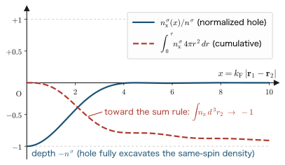

Chapter 5The Hartree–Fock Method
In Chapter 4, we studied the Thomas–Fermi model, which approximates the total energy using only the electron density $n(\rr)$ as a variable, and we acquired a mathematical tool, the functional derivative. In this chapter we return, for the moment, to the wave function. Solving the Schrödinger equation of a many-electron system exactly is hopelessly difficult, but with a single stroke— “approximate the many-electron wave function by a single determinant”— we can construct a theory that takes exactly into account the quantum-mechanical core of the electron–electron interaction—exchange. This is the Hartree–Fock (HF) method. While the HF method includes exchange exactly, it omits correlation completely, and so it provides a reference point for discussing “exchange” and “correlation” separately. This separation will be the foundation for understanding the exchange-correlation functionals of density functional theory in later chapters. In the calculations of this chapter, the signs and the combinations of permutations that arise in expanding determinants appear again and again. The second quantization introduced in Chapter 6 extracts those combinatorial rules and turns them into an algebra. Throughout this chapter we use Hartree atomic units ($\hbar = m_e = e = 4\pi\varepsilon_0 = 1$; see Chapter 1). The unit of energy is the hartree (Ha), and $1\ \mathrm{Ha} = 27.2114\ \mathrm{eV}$. In this chapter we also write the electron density as $n(\rr)$ and the density of spin $\sigma$ as $n^\sigma(\rr)$. These are exactly the same quantities that are written $\rho(\rr)$ and $\rho^\sigma(\rr)$ from Chapter 9 onward (the Hohenberg–Kohn theorems, the Kohn–Sham method, and exchange-correlation functionals).
- The Hartree approximation: the ideas of the mean field and self-consistency (SCF), and the defects of the product wave function
- The argument that derives the antisymmetry of the wave function ($e^{i\alpha}=\pm 1$) from the indistinguishability of electrons
- The construction of the Slater determinant, and how the Pauli exclusion principle holds automatically
- The complete expansion of $\braket{\Phi|\hat{H}|\Phi}$ for a two-electron system (all four terms (A), (B), (C), (D) are calculated)
- The Coulomb integral $J_{ll'}$ and the exchange integral $K_{ll'}$, and the exact cancellation of self-interaction
- Derivation of the HF equations by the method of Lagrange multipliers and functional derivatives, and their transformation to the canonical form
- The exchange hole and the sum rule: exchange is “a hole dug around an electron of the same spin”
- Koopmans' theorem, the performance of the HF method, and the definition of the correlation energy
5.1 The Starting Point of Mean-Field Approximations: The Hartree Approximation
First we set up the problem. The Hamiltonian of an $N$-electron system moving in an external potential $v_{\mathrm{ext}}(\rr)$ (such as the attractive potential created by the nuclei), in Hartree atomic units, is
\begin{equation} \hat{H} = \sum_{i=1}^{N}\left(-\frac{1}{2}\nabla_i^2 + v_{\mathrm{ext}}(\rr_i)\right) + \frac{1}{2}\sum_{i\neq j}^{N}\frac{1}{\abs{\rr_i-\rr_j}} \label{eq:5-many-hamiltonian} \end{equation}The first term is the kinetic energy of each electron plus the external potential, and the second term is the Coulomb repulsion between electrons (the factor $1/2$ is a correction for counting each pair $(i,j)$ and $(j,i)$ twice). An eigenfunction $\Psi(\rr_1\sigma_1,\ldots,\rr_N\sigma_N)$ of this $\hat{H}$ is a function of $3N$ spatial variables and $N$ spin variables, and because of the electron–electron repulsion term the variables cannot be separated. This is the source of the difficulty of the many-body problem.
So we begin with the most naive approximation. If there were no electron–electron repulsion term, $\hat{H}$ would be a sum of one-electron Hamiltonians, and its eigenfunction could be written as a product of one-electron wave functions (orbitals) $\varphi_l$. The form obtained by carrying this form over unchanged to the case with interactions, namely
\begin{equation} \Phi_{\mathrm{H}}(x_1, x_2, \ldots, x_N) = \varphi_1(x_1)\,\varphi_2(x_2)\cdots\varphi_N(x_N) \label{eq:5-hartree-product} \end{equation}is called the Hartree product. Here $x_i$ is a variable that combines the spatial coordinate and the spin of electron $i$, and its precise definition is given in the next section (for the time being, please read $\int\dd x$ as "an integral that combines the spatial integral and the spin sum"). Each orbital is assumed to be normalized: $\int\dd x\,\abs{\varphi_l(x)}^2 = 1$. Moreover, the orbitals can be chosen to be orthogonal to one another: $\int\dd x\,\varphi_l^*(x)\varphi_{l'}(x) = \delta_{ll'}$.
Next, we calculate the energy expectation value for the Hartree product. For a product wave function every multiple integral factorizes into a product of one-electron integrals, so the calculation can be carried out straightforwardly.
Derivation: Energy expectation value of the Hartree product
First we check the normalization. The squared absolute value of $\Phi_{\mathrm{H}}$ is the product of the squared absolute values of the individual orbitals, so the multiple integral factorizes into a product of one-electron integrals:
\begin{align} \braket{\Phi_{\mathrm{H}}|\Phi_{\mathrm{H}}} &= \int\dd x_1\cdots\int\dd x_N\, \abs{\varphi_1(x_1)}^2\abs{\varphi_2(x_2)}^2\cdots\abs{\varphi_N(x_N)}^2 \notag\\ &= \prod_{l=1}^{N}\int\dd x_l\,\abs{\varphi_l(x_l)}^2 = 1 . \label{eq:5-hartree-norm} \end{align}From the first line to the second, we used the fact that the integrand is a product of factors for the individual variables to factorize the multiple integral into a product, and finally we used the normalization condition of each orbital.
Next we calculate the expectation value of the one-body term. The operator $\hat{V}_1(x_i) \equiv -\tfrac{1}{2}\nabla_i^2 + v_{\mathrm{ext}}(\rr_i)$ acts only on the variable $x_i$, so all integrals other than the $i$th one are normalization integrals:
\begin{align} \braket{\Phi_{\mathrm{H}}|\hat{V}_1(x_i)|\Phi_{\mathrm{H}}} &= \int\dd x_i\,\varphi_i^*(x_i)\hat{V}_1(x_i)\varphi_i(x_i) \prod_{l\neq i}\int\dd x_l\,\abs{\varphi_l(x_l)}^2 \notag\\ &= \int\dd x\,\varphi_i^*(x)\hat{V}_1(x)\varphi_i(x) \equiv H_i . \label{eq:5-one-body-H} \end{align}In the first line we kept only the factors that depend on $x_i$ inside the $x_i$ integral and moved the rest outside. In the second line we used the fact that each integral with $l\neq i$ equals 1 by normalization, and renamed the integration variable to $x$ (we call $H_i$ the one-electron integral).
The two-body term is handled in the same way. Since $\hat{V}_2(x_i,x_j) \equiv 1/\abs{\rr_i - \rr_j}$ acts only on $x_i$ and $x_j$ (in fact it does not act on the spin and depends only on the spatial coordinates),
\begin{align} \braket{\Phi_{\mathrm{H}}\left|\frac{1}{\abs{\rr_i-\rr_j}}\right|\Phi_{\mathrm{H}}} &= \iint\dd x_i\,\dd x_j\, \abs{\varphi_i(x_i)}^2\frac{1}{\abs{\rr_i-\rr_j}}\abs{\varphi_j(x_j)}^2 \prod_{l\neq i,j}\int\dd x_l\,\abs{\varphi_l(x_l)}^2 \notag\\ &= \iint\dd x_1\,\dd x_2\, \varphi_i^*(x_1)\varphi_i(x_1)\frac{1}{\abs{\rr_1-\rr_2}}\varphi_j^*(x_2)\varphi_j(x_2) \equiv J_{ij} . \label{eq:5-Jij-def-pre} \end{align}Here too, the integrals other than those over $x_i,\,x_j$ equal 1 by normalization, and finally we renamed the integration variables to $x_1, x_2$. This $J_{ij}$ is the Coulomb integral, which will appear repeatedly later. Summing the above over all terms of Eq. \eqref{eq:5-many-hamiltonian}, we obtain the energy expectation value of the Hartree product
\begin{equation} E_{\mathrm{H}} = \sum_{l=1}^{N} H_l + \frac{1}{2}\sum_{l\neq l'}^{N} J_{ll'} \label{eq:5-hartree-energy} \end{equation}Note that the sum of the two-body term is restricted to $l \neq l'$ (the interaction of an electron with itself is not included). This is a direct consequence of the fact that the sum in the Hamiltonian \eqref{eq:5-many-hamiltonian} is restricted to $i\neq j$.
Let us minimize the $E_{\mathrm{H}}$ thus obtained with respect to the orbitals under the normalization condition $\int\dd x\,\abs{\varphi_l}^2=1$. We use the method of Lagrange multipliers and the functional derivative learned in Chapter 4 just as they are. We construct the functional with constraints
\begin{equation} F_{\mathrm{H}}[\{\varphi\}] = E_{\mathrm{H}} - \sum_{l=1}^{N}\varepsilon_l \left(\int\dd x\,\varphi_l^*(x)\varphi_l(x) - 1\right) \label{eq:5-hartree-lagrange} \end{equation}and take its functional derivative with respect to $\varphi_k^*(x)$ (the reason why $\varphi$ and $\varphi^*$ may be treated as independent variables is justified in the Math Note in Section 5.6; here we use the result in advance). Applying the basic formula of Chapter 4, $\delta\varphi_l^*(x')/\delta\varphi_k^*(x) = \delta_{lk}\,\delta(x-x')$, to each term, we obtain
\begin{align} \frac{\delta F_{\mathrm{H}}}{\delta \varphi_k^*(x)} &= \hat{V}_1(x)\varphi_k(x) + \frac{1}{2}\sum_{l'(\neq k)}\int\dd x'\,\frac{\abs{\varphi_{l'}(x')}^2}{\abs{\rr-\rr'}}\,\varphi_k(x) + \frac{1}{2}\sum_{l(\neq k)}\int\dd x'\,\frac{\abs{\varphi_{l}(x')}^2}{\abs{\rr-\rr'}}\,\varphi_k(x) - \varepsilon_k\varphi_k(x) \notag\\ &= \hat{V}_1(x)\varphi_k(x) + \sum_{l'(\neq k)}\int\dd x'\,\frac{\abs{\varphi_{l'}(x')}^2}{\abs{\rr-\rr'}}\,\varphi_k(x) - \varepsilon_k\varphi_k(x). \label{eq:5-hartree-variation} \end{align}The second term of the first line comes from the $l=k$ terms of the double sum in Eq. \eqref{eq:5-hartree-energy}, and the third term comes from the $l'=k$ terms (since $J_{ll'}$ can contain $\varphi_k^*$ in two places, differentiation yields two contributions). In the second line we combined these two contributions, using the fact that they have the same form, and the factor $1/2$ disappeared. Setting this equal to zero gives the Hartree equation
\begin{equation} \left[-\frac{1}{2}\nabla^2 + v_{\mathrm{ext}}(\rr) + \sum_{l'(\neq k)}\int\dd x'\,\frac{\abs{\varphi_{l'}(x')}^2}{\abs{\rr-\rr'}}\right]\varphi_k(x) = \varepsilon_k\,\varphi_k(x) \label{eq:5-hartree-eq} \end{equation}To put into words what we have obtained: electron $k$ obeys a one-electron problem in which it moves in the electrostatic potential (the mean field) created by the charge density $\sum_{l'\neq k}\abs{\varphi_{l'}}^2$ of all the other electrons. The many-body problem has been transformed into $N$ one-electron equations.
Physical Meaning: The mean field and self-consistency
Eq. \eqref{eq:5-hartree-eq} has a curious circular structure. The potential felt by electron $k$ is built from the other orbitals $\{\varphi_{l'}\}$, but those $\{\varphi_{l'}\}$ themselves are also solutions of Eq. \eqref{eq:5-hartree-eq}. In other words, “the equation to be solved cannot be written down without knowing the solution.” A problem with this structure is solved by an iterative method: construct the potential from suitable initial orbitals, solve the equation and update the orbitals, and rebuild the potential—repeat this until the input and the output agree (Figure 5.1). A solution for which the input and output agree is called a self-consistent solution, and this iterative procedure is called the self-consistent field (SCF) loop. Self-consistency appears in exactly the same form in the HF method of this chapter and in the later Kohn–Sham method, and it is the most fundamental structure of electronic-structure calculations.
However, the Hartree product \eqref{eq:5-hartree-product} has a defect that cannot be overlooked.
- It attaches “serial numbers” to the electrons. $\Phi_{\mathrm{H}}$ specifies that “electron 1 occupies orbital $\varphi_1$ and electron 2 occupies orbital $\varphi_2$,” but electrons are indistinguishable particles, so such a specification has no physical meaning. In fact, $\abs{\Phi_{\mathrm{H}}(x_1,x_2,\ldots)}^2 \neq \abs{\Phi_{\mathrm{H}}(x_2,x_1,\ldots)}^2$ holds, which violates the requirement of indistinguishability discussed in the next section.
- The Pauli exclusion principle is not guaranteed. For a product wave function, no contradiction arises even if all the electrons are packed into the same orbital. The exclusion principle can only be imposed by hand; it is not built into the theory.
- Exchange effects are not included. As we will see later, when the wave function is properly antisymmetrized, electrons of the same spin avoid one another (in terms of energy, an exchange integral $-K$ appears). The Hartree product misses this effect entirely.
All of these defects reduce to a single problem, the symmetry of the wave function. We take it up head-on in the next section.
5.2 Indistinguishability of Electrons and Antisymmetry
The goal of this section is to derive the symmetry that the wave function must satisfy from the physical requirement alone that “electrons cannot be distinguished.” First we set up the notation.
Definition: Combined variable $x = (\rr, \sigma)$
To specify the state of one electron, we need both the spatial coordinate $\rr$ and the spin variable $\sigma$ ($\sigma = \uparrow$ or $\downarrow$, that is, $s_z = +1/2$ or $-1/2$). We write the variable combining these two as $x \equiv (\rr, \sigma)$. An integral over $x$ means “a spatial integral and a spin sum”:
$$ \int \dd x \;(\cdots) \equiv \sum_{\sigma=\uparrow,\downarrow}\int \dd^3 r\;(\cdots). $$The one-electron wave function (spin orbital) $\varphi(x)$ can often be separated into the product of a spatial part and a spin part, $\varphi(x) = \phi(\rr)\,\eta(\sigma)$. The spin function $\eta$ is of two kinds, $\eta_\uparrow(\sigma) = \delta_{\sigma\uparrow}$ and $\eta_\downarrow(\sigma) = \delta_{\sigma\downarrow}$, and satisfies the orthonormality relation $\sum_\sigma \eta_s^*(\sigma)\eta_{s'}(\sigma) = \delta_{ss'}$. This separation plays an essential role in Section 5.7 (the spin selection rule for the exchange integral).
For simplicity, consider a two-electron system. Let the wave function be $\Phi(x_1, x_2)$. What is observable in quantum mechanics is $\abs{\Phi}^2$ (and expectation values built from $\Phi$), not $\Phi$ itself. That electrons cannot be distinguished from one another means that the probability density that “electron 1 is at $x_1$ and electron 2 is at $x_2$” and the probability density that “electron 1 is at $x_2$ and electron 2 is at $x_1$” are equal, that is,
\begin{equation} \abs{\Phi(x_1, x_2)}^2 = \abs{\Phi(x_2, x_1)}^2 \label{eq:5-indistinguish} \end{equation}holds. If this equality were violated, we could attach labels to the two electrons by measuring the probability distribution, which contradicts the premise that they are “indistinguishable.”
Equation \eqref{eq:5-indistinguish} states that the two complex numbers $\Phi(x_1,x_2)$ and $\Phi(x_2,x_1)$ have equal absolute values, so they differ only by a phase factor:
\begin{equation} \Phi(x_1, x_2) = e^{i\alpha}\,\Phi(x_2, x_1). \label{eq:5-phase} \end{equation}Here we take the phase $\alpha$ to be a constant independent of the coordinates (we regard it as a property of the operation of exchanging identical particles itself, independent of where the exchange takes place. For a more rigorous treatment, see the Math Note below). The key point is to use this relation twice in succession. Applying \eqref{eq:5-phase} again to $\Phi(x_2, x_1)$ on the right-hand side of \eqref{eq:5-phase} (we merely use it with the names of the variables interchanged), we obtain
\begin{align} \Phi(x_1, x_2) &= e^{i\alpha}\,\Phi(x_2, x_1) \notag\\ &= e^{i\alpha}\left(e^{i\alpha}\,\Phi(x_1, x_2)\right) \notag\\ &= e^{2i\alpha}\,\Phi(x_1, x_2). \label{eq:5-phase-twice} \end{align}In going from the first line to the second, we substituted \eqref{eq:5-phase} with $x_1 \leftrightarrow x_2$ interchanged, namely $\Phi(x_2,x_1) = e^{i\alpha}\Phi(x_1,x_2)$. Since exchanging twice returns the original state, as a natural consequence we obtain
\begin{equation} e^{2i\alpha} = 1 \quad\Longrightarrow\quad e^{i\alpha} = \pm 1 \label{eq:5-pm1} \end{equation}There are only two possible choices of the phase. Particles that choose $e^{i\alpha}=+1$ (symmetric under exchange) are called bosons, and particles that choose $e^{i\alpha}=-1$ (antisymmetric under exchange) are called fermions. Which one applies is fixed for each kind of particle; as an experimental fact (and also as a consequence of the spin–statistics theorem of relativistic quantum theory), electrons, which have spin $1/2$, are fermions. Therefore the wave function of an electron system must satisfy
This relation must hold. For an $N$-electron system, the sign is reversed under the exchange of any two variables. For a general permutation $P$, when $P$ is decomposed into a product of transpositions (interchanges of two elements), a sign $\mathrm{sgn}(P) = (-1)^P$ appears according to whether the number of transpositions is even or odd:
\begin{equation} \Phi(x_{P(1)}, x_{P(2)}, \ldots, x_{P(N)}) = \mathrm{sgn}(P)\,\Phi(x_1, x_2, \ldots, x_N). \label{eq:5-antisym-N} \end{equation}Math Note: Formulation with the exchange operator
Let us restate the above argument in a somewhat more polished form. If we define the operation of interchanging the variables as an operator, $\hat{P}_{12}\Phi(x_1,x_2) \equiv \Phi(x_2,x_1)$, then it is clear from the definition that $\hat{P}_{12}^2 = \hat{1}$ (interchanging twice restores the original). Therefore an eigenvalue $p$ of $\hat{P}_{12}$ satisfies $p^2 = 1$, that is, $p = \pm 1$. This is the operator version of \eqref{eq:5-pm1}. Moreover, since the Hamiltonian \eqref{eq:5-many-hamiltonian} is completely symmetric under the interchange of electrons, $[\hat{P}_{12}, \hat{H}] = 0$ holds. In other words, exchange symmetry is a conserved quantity, and a wave function that is antisymmetric at the outset remains antisymmetric under time evolution. The choice that “the electron system belongs to the antisymmetric sector,” once imposed, is never broken for all time; it is a consistent rule of nature. Note that in Eq. \eqref{eq:5-phase} we assumed the phase to be a constant; even if the phase had a coordinate dependence $\alpha(x_1,x_2)$, the argument of the double exchange would require $\alpha(x_1,x_2) + \alpha(x_2,x_1) = 2\pi n$, and furthermore, for the exchange operation to be compatible with the superposition of wave functions (linearity), $\alpha$ would have to be a constant independent of the state. It is known that in three-dimensional space this conclusion $e^{i\alpha}=\pm1$ holds exactly.
With the above, the requirement that “the wave function must be antisymmetric” has been established. The question is how to construct, systematically, many-electron wave functions that satisfy antisymmetry. The answer is the Slater determinant.
5.3 The Slater Determinant
5.3.1 The determinantal wave function for two electrons
From two orthonormal spin orbitals $\varphi_a,\ \varphi_b$ ($\int\dd x\,\varphi_i^*\varphi_j = \delta_{ij}$), let us construct an antisymmetric two-electron wave function. The Hartree product $\varphi_a(x_1)\varphi_b(x_2)$ is not antisymmetric, but subtracting the product with the variables interchanged, $\varphi_b(x_1)\varphi_a(x_2)$, should make it antisymmetric. Attaching a normalization constant $C$, we set
\begin{equation} \Phi(x_1, x_2) = C\left\{\varphi_a(x_1)\varphi_b(x_2) - \varphi_b(x_1)\varphi_a(x_2)\right\} \label{eq:5-two-det-raw} \end{equation}First we determine $C$. We are about to expand $\braket{\Phi|\Phi}$; since the same type of expansion appears again in the energy calculation of Section 5.4, we carry it out carefully here.
Derivation: Confirming the normalization factor $C = 1/\sqrt{2}$
Substituting \eqref{eq:5-two-det-raw} into $\braket{\Phi|\Phi}$ and expanding the product gives four terms:
\begin{align} \braket{\Phi|\Phi} &= \abs{C}^2 \iint\dd x_1\,\dd x_2 \left\{\varphi_a^*(x_1)\varphi_b^*(x_2) - \varphi_b^*(x_1)\varphi_a^*(x_2)\right\} \left\{\varphi_a(x_1)\varphi_b(x_2) - \varphi_b(x_1)\varphi_a(x_2)\right\} \notag\\ &= \abs{C}^2\biggl[ \iint\dd x_1 \dd x_2\,\varphi_a^*(x_1)\varphi_a(x_1)\,\varphi_b^*(x_2)\varphi_b(x_2) \notag\\ &\qquad\quad - \iint\dd x_1 \dd x_2\,\varphi_a^*(x_1)\varphi_b(x_1)\,\varphi_b^*(x_2)\varphi_a(x_2) \notag\\ &\qquad\quad - \iint\dd x_1 \dd x_2\,\varphi_b^*(x_1)\varphi_a(x_1)\,\varphi_a^*(x_2)\varphi_b(x_2) \notag\\ &\qquad\quad + \iint\dd x_1 \dd x_2\,\varphi_b^*(x_1)\varphi_b(x_1)\,\varphi_a^*(x_2)\varphi_a(x_2) \biggr]. \label{eq:5-norm-expand} \end{align}The double integral in each term can be factorized into a product of an $x_1$ integral and an $x_2$ integral (because the integrand is a product of a function of $x_1$ and a function of $x_2$). Factorizing and using orthonormality, we obtain
\begin{align} \text{first term} &= \underbrace{\int\dd x_1\,\varphi_a^*\varphi_a}_{=\,1}\; \underbrace{\int\dd x_2\,\varphi_b^*\varphi_b}_{=\,1} = 1, \notag\\ \text{second term} &= -\underbrace{\int\dd x_1\,\varphi_a^*\varphi_b}_{=\,0}\; \underbrace{\int\dd x_2\,\varphi_b^*\varphi_a}_{=\,0} = 0, \notag\\ \text{third term} &= -\underbrace{\int\dd x_1\,\varphi_b^*\varphi_a}_{=\,0}\; \underbrace{\int\dd x_2\,\varphi_a^*\varphi_b}_{=\,0} = 0, \notag\\ \text{fourth term} &= \underbrace{\int\dd x_1\,\varphi_b^*\varphi_b}_{=\,1}\; \underbrace{\int\dd x_2\,\varphi_a^*\varphi_a}_{=\,1} = 1. \notag \end{align}The terms with “the same orbitals” (the first and fourth terms) equal 1 by normalization, and the cross terms in which “different orbitals are mixed” (the second and third terms) equal 0 by orthogonality. Hence
\begin{equation} \braket{\Phi|\Phi} = \abs{C}^2 (1 + 1) = 2\abs{C}^2 \quad\Longrightarrow\quad C = \frac{1}{\sqrt{2}} \label{eq:5-norm-result} \end{equation}is determined (the arbitrariness of the phase was fixed by choosing $C$ to be a positive real number).
Next we confirm the antisymmetry. Interchanging $x_1$ and $x_2$ in \eqref{eq:5-two-det-raw}, we obtain
\begin{align} \Phi(x_2, x_1) &= \frac{1}{\sqrt{2}}\left\{\varphi_a(x_2)\varphi_b(x_1) - \varphi_b(x_2)\varphi_a(x_1)\right\} \notag\\ &= -\frac{1}{\sqrt{2}}\left\{\varphi_a(x_1)\varphi_b(x_2) - \varphi_b(x_1)\varphi_a(x_2)\right\} = -\Phi(x_1, x_2). \label{eq:5-antisym-check} \end{align}The first line is a mere relabeling of the variables; the second line only interchanges the order of the two terms and refactors the whole expression. Indeed, \eqref{eq:5-antisym} is satisfied. Now, the curly bracket in \eqref{eq:5-two-det-raw} is exactly the expansion of a $2\times 2$ determinant:
\begin{equation} \Phi(x_1, x_2) = \frac{1}{\sqrt{2}} \begin{vmatrix} \varphi_a(x_1) & \varphi_b(x_1) \\ \varphi_a(x_2) & \varphi_b(x_2) \end{vmatrix} \;\equiv\; \frac{1}{\sqrt{2}}\abs{\varphi_a\,\varphi_b}. \label{eq:5-slater2} \end{equation}The rows correspond to the electrons (variables $x_1, x_2$) and the columns to the orbitals ($\varphi_a, \varphi_b$). The rightmost expression is a shorthand for a determinantal wave function, a customary notation that writes only the sequence of diagonal elements. A wave function of this form is called a Slater determinant.
Math Note: Two properties of determinants
Here we recall the properties of determinants that we will use below. For the $2\times 2$ case they can be verified directly from the expansion formula $\begin{vmatrix} p & q \\ r & s \end{vmatrix} = ps - qr$.
(i) Interchanging two rows (or columns) reverses the sign. For a $2\times2$ determinant, interchanging the rows gives $\begin{vmatrix} r & s \\ p & q \end{vmatrix} = rq - sp = -(ps - qr)$. A general $N\times N$ determinant is defined by a sum over permutations, $\det A = \sum_P \mathrm{sgn}(P)\,A_{1P(1)}A_{2P(2)}\cdots A_{NP(N)}$, and interchanging two rows amounts to composing each permutation $P$ with one transposition. Composing with one transposition reverses the sign $\mathrm{sgn}(P)$ of the permutation, so the sign of the whole determinant is reversed.
(ii) If two rows (or columns) are equal, the determinant is zero. Interchanging the two equal rows should leave the determinant unchanged, but by (i) it reverses the sign. The only number satisfying $D = -D$ is $D = 0$.
In a Slater determinant, interchanging rows means exchanging electron coordinates, and interchanging columns means exchanging orbital labels. Property (i) automatically guarantees the antisymmetry \eqref{eq:5-antisym}, and property (ii) automatically guarantees the Pauli exclusion principle.
5.3.2 Automatic fulfillment of the Pauli exclusion principle
We now confirm the most important property of the Slater determinant. We examine two cases.
Case 1: Trying to put two electrons into the same spin orbital ($\varphi_a = \varphi_b$). Substituting $\varphi_b = \varphi_a$ into \eqref{eq:5-two-det-raw}, we obtain
\begin{equation} \Phi(x_1, x_2) = \frac{1}{\sqrt{2}} \left\{\varphi_a(x_1)\varphi_a(x_2) - \varphi_a(x_1)\varphi_a(x_2)\right\} = 0. \label{eq:5-pauli-orbital} \end{equation}The two terms have exactly the same form, and the result vanishes identically for all $(x_1,x_2)$. This corresponds to the case in which two columns of the determinant are equal (property (ii) of the Math Note). The wave function is identically zero; that is, such a state does not exist. “Two or more electrons cannot occupy the same spin orbital”—the Pauli exclusion principle emerged automatically from the structure of the determinant, even though we imposed nothing.
Case 2: Two electrons trying to take the same coordinate and the same spin ($x_1 = x_2 = x$).
\begin{equation} \Phi(x, x) = \frac{1}{\sqrt{2}} \left\{\varphi_a(x)\varphi_b(x) - \varphi_b(x)\varphi_a(x)\right\} = 0. \label{eq:5-pauli-position} \end{equation}This time two rows of the determinant are equal. When $x = (\rr,\sigma)$ coincides completely, that is, when two electrons with the same spin come to the same place, the wave function (and hence the probability amplitude) becomes zero. Electrons of the same spin avoid each other spatially—this property will be quantified as the “exchange hole” in Section 5.8. Conversely, note that if the spins differ, then $x_1 \neq x_2$, so the wave function does not vanish even when the spatial coordinates coincide.
5.3.3 Generalization to the $N$-electron system
Using $N$ orthonormal spin orbitals $\varphi_1, \ldots, \varphi_N$, we construct an $N\times N$ determinant:
Using the permutation expansion of the determinant, this can also be written as
\begin{equation} \Phi(x_1, \ldots, x_N) = \frac{1}{\sqrt{N!}}\sum_{P}\mathrm{sgn}(P)\, \varphi_{P(1)}(x_1)\,\varphi_{P(2)}(x_2)\cdots\varphi_{P(N)}(x_N) \label{eq:5-slaterN-perm} \end{equation}The sum runs over all $N!$ permutations $P$. Let us confirm why the normalization factor is $1/\sqrt{N!}$. This also prepares for the generalization in Section 5.5.
Derivation: Normalization of the $N$-electron Slater determinant
Writing out the inner product using \eqref{eq:5-slaterN-perm}, we obtain a double sum over permutations:
\begin{align} \braket{\Phi|\Phi} &= \frac{1}{N!}\sum_{P}\sum_{Q}\mathrm{sgn}(P)\,\mathrm{sgn}(Q) \int\dd x_1\cdots\dd x_N\, \prod_{i=1}^{N}\varphi_{P(i)}^*(x_i)\,\varphi_{Q(i)}(x_i) \notag\\ &= \frac{1}{N!}\sum_{P}\sum_{Q}\mathrm{sgn}(P)\,\mathrm{sgn}(Q) \prod_{i=1}^{N}\int\dd x_i\,\varphi_{P(i)}^*(x_i)\,\varphi_{Q(i)}(x_i) \notag\\ &= \frac{1}{N!}\sum_{P}\sum_{Q}\mathrm{sgn}(P)\,\mathrm{sgn}(Q) \prod_{i=1}^{N}\delta_{P(i),\,Q(i)}. \label{eq:5-normN-1} \end{align}From the first line to the second, we used the fact that the integrand is a product of factors for each variable $x_i$ to decompose the multiple integral into a product of one-electron integrals. From the second line to the third, we used the orthonormality $\int\dd x\,\varphi_l^*\varphi_{l'} = \delta_{ll'}$. The last product $\prod_i \delta_{P(i),Q(i)}$ equals 1 only when $P(i) = Q(i)$ for all $i$. That is, only the terms with $Q = P$ survive. In this case $\mathrm{sgn}(P)\mathrm{sgn}(Q) = \mathrm{sgn}(P)^2 = 1$, so
\begin{equation} \braket{\Phi|\Phi} = \frac{1}{N!}\sum_{P} 1 = \frac{N!}{N!} = 1. \label{eq:5-normN-2} \end{equation}We used the fact that the total number of permutations is $N!$. The factor $1/\sqrt{N!}$ is a normalization factor chosen precisely to cancel “the number of surviving diagonal terms.”
In the $N$-electron case, too, the properties are the same as in the two-electron case: the sign is reversed by interchanging any two rows (electron coordinates) (antisymmetry \eqref{eq:5-antisym-N}), and the determinant vanishes if two columns (orbitals) are equal or two rows (coordinates and spins) are equal (the Pauli exclusion principle). With this, we have obtained the “building block” of a many-electron wave function that has antisymmetry built into its structure. In the next section we use this wave function to calculate the expectation value of the energy. This is the central calculation of this chapter.
5.4 Complete Expansion of the Energy Expectation Value (Two-Electron System)
This section is the heart of the chapter. Taking the Slater determinant \eqref{eq:5-slater2} as the trial wave function, we compute the expectation value of the Hamiltonian
\begin{equation} E = \frac{\braket{\Phi|\hat{H}|\Phi}}{\braket{\Phi|\Phi}} \label{eq:5-rayleigh} \end{equation}By the variational principle (Chapter 2), this $E$ gives an upper bound to the exact ground-state energy. All of the calculation is carried out for the two-electron system. Four terms appear, and we compute every one of them without omission. The two operations learned here, “kill the cross terms by orthogonality” and “relabel the integration variables so that the terms combine into the same form,” carry over unchanged to the $N$-electron system (Section 5.5).
Let us organize the Hamiltonian into a one-body part and a two-body part. For the two-electron system,
\begin{equation} \hat{H} = \hat{V}_1(x_1) + \hat{V}_1(x_2) + \hat{V}_2(x_1, x_2), \qquad \hat{V}_1(x) = -\frac{1}{2}\nabla^2 + v_{\mathrm{ext}}(\rr), \qquad \hat{V}_2(x_1, x_2) = \frac{1}{\abs{\rr_1 - \rr_2}}. \label{eq:5-H-split} \end{equation}Note that $\hat{V}_2$ depends only on the spatial coordinates and does not act on the spin (in the equations below we write $\hat{V}_2$ as if it were a function of $x$, but in fact it is $\abs{\rr_1-\rr_2}^{-1}$).
Example: Helium atom
For a helium atom with a nucleus of charge $+2$ fixed at the origin,
$$ \hat{H} = -\frac{1}{2}\nabla_1^2 - \frac{1}{2}\nabla_2^2 - \frac{2}{r_1} - \frac{2}{r_2} + \frac{1}{\abs{\rr_1 - \rr_2}} $$and we can read off $\hat{V}_1(x) = -\tfrac{1}{2}\nabla^2 - 2/r$ and $\hat{V}_2 = \abs{\rr_1-\rr_2}^{-1}$. In the ground state, the two electrons occupy the same spatial orbital $\phi_{1s}(\rr)$ with opposite spins: $\varphi_a(x) = \phi_{1s}(\rr)\eta_\uparrow(\sigma)$, $\varphi_b(x) = \phi_{1s}(\rr)\eta_\downarrow(\sigma)$. Because the spins differ, $\varphi_a \neq \varphi_b$, and the Slater determinant does not vanish. We complete this example in Exercise 1 at the end of the chapter.
5.4.1 The denominator: $\braket{\Phi|\Phi} = 1$
The denominator was already checked in the normalization calculation of Section 5.3, Eqs. \eqref{eq:5-norm-expand}–\eqref{eq:5-norm-result}: of the four terms, the two cross terms vanish by the orthogonality of the orbitals, and the remaining two terms give $\tfrac{1}{2} + \tfrac{1}{2} = 1$. That is, $\braket{\Phi|\Phi} = 1$, so in Eq. \eqref{eq:5-rayleigh} only the numerator needs to be computed.
5.4.2 The four-term expansion of the numerator
Substituting Eq. \eqref{eq:5-slater2} into the numerator and expanding the bra side and the ket side into two terms each, we obtain $2\times 2 = 4$ terms:
\begin{align} \braket{\Phi|\hat{H}|\Phi} &= \frac{1}{2}\iint\dd x_1\dd x_2 \left\{\varphi_a^*(x_1)\varphi_b^*(x_2) - \varphi_b^*(x_1)\varphi_a^*(x_2)\right\} \hat{H} \left\{\varphi_a(x_1)\varphi_b(x_2) - \varphi_b(x_1)\varphi_a(x_2)\right\} \notag\\ &= \underbrace{\frac{1}{2}\iint\dd x_1\dd x_2\, \varphi_a^*(x_1)\varphi_b^*(x_2)\,\hat{H}\,\varphi_a(x_1)\varphi_b(x_2)}_{(\mathrm{A})} \notag\\ &\quad - \underbrace{\frac{1}{2}\iint\dd x_1\dd x_2\, \varphi_a^*(x_1)\varphi_b^*(x_2)\,\hat{H}\,\varphi_b(x_1)\varphi_a(x_2)}_{-(\mathrm{B})\text{ that is, }(\mathrm{B})=\text{this term with the sign reversed}} \notag\\ &\quad - \underbrace{\frac{1}{2}\iint\dd x_1\dd x_2\, \varphi_b^*(x_1)\varphi_a^*(x_2)\,\hat{H}\,\varphi_a(x_1)\varphi_b(x_2)}_{-(\mathrm{C})} \notag\\ &\quad + \underbrace{\frac{1}{2}\iint\dd x_1\dd x_2\, \varphi_b^*(x_1)\varphi_a^*(x_2)\,\hat{H}\,\varphi_b(x_1)\varphi_a(x_2)}_{(\mathrm{D})}. \label{eq:5-ABCD} \end{align}Below, including the signs, we call these $(\mathrm{A})$: both bra and ket in the “direct” arrangement, $(\mathrm{B})$: exchange on the ket side only (with a minus sign), $(\mathrm{C})$: exchange on the bra side only (with a minus sign), and $(\mathrm{D})$: exchange on both sides. Using $\hat{H} = \hat{V}_1(x_1) + \hat{V}_1(x_2) + \hat{V}_2$, we compute each of them by splitting it into a “one-body contribution” and a “two-body contribution.”
Derivation: Term (A) — direct, direct
Substitute the decomposition of $\hat{H}$ into $(\mathrm{A})$, and let the one-body part be $(\mathrm{A1})$ and the two-body part be $(\mathrm{A2})$. First $(\mathrm{A1})$:
\begin{align} (\mathrm{A1}) &= \frac{1}{2}\iint\dd x_1\dd x_2\, \varphi_a^*(x_1)\varphi_b^*(x_2)\,\hat{V}_1(x_1)\,\varphi_a(x_1)\varphi_b(x_2) \notag\\ &\quad + \frac{1}{2}\iint\dd x_1\dd x_2\, \varphi_a^*(x_1)\varphi_b^*(x_2)\,\hat{V}_1(x_2)\,\varphi_a(x_1)\varphi_b(x_2) \notag\\ &= \frac{1}{2}\int\dd x_1\,\varphi_a^*(x_1)\hat{V}_1(x_1)\varphi_a(x_1) \underbrace{\int\dd x_2\,\varphi_b^*(x_2)\varphi_b(x_2)}_{=\,1} \notag\\ &\quad + \frac{1}{2}\underbrace{\int\dd x_1\,\varphi_a^*(x_1)\varphi_a(x_1)}_{=\,1} \int\dd x_2\,\varphi_b^*(x_2)\hat{V}_1(x_2)\varphi_b(x_2) \notag\\ &= \frac{1}{2}H_a + \frac{1}{2}H_b. \label{eq:5-A1} \end{align}Lines 1–2: $\hat{V}_1(x_1)$ acts only on $x_1$ and $\hat{V}_1(x_2)$ acts only on $x_2$, so in each term the integral over the variable on which the operator does not act was pulled out as a factor. Lines 3–4: by the normalization condition, the integrals pulled out equal 1. Last line: we used the notation $H_i = \int\dd x\,\varphi_i^*\hat{V}_1\varphi_i$ for the one-electron integral (Eq. \eqref{eq:5-one-body-H}).
Next $(\mathrm{A2})$. Since $\hat{V}_2 = \abs{\rr_1-\rr_2}^{-1}$ is a multiplication operator, we only need to rearrange the factors:
\begin{align} (\mathrm{A2}) &= \frac{1}{2}\iint\dd x_1\dd x_2\, \varphi_a^*(x_1)\varphi_b^*(x_2)\,\frac{1}{\abs{\rr_1-\rr_2}}\,\varphi_a(x_1)\varphi_b(x_2) \notag\\ &= \frac{1}{2}\iint\dd x_1\dd x_2\, \varphi_a^*(x_1)\varphi_a(x_1)\,\frac{1}{\abs{\rr_1-\rr_2}}\,\varphi_b^*(x_2)\varphi_b(x_2) \;\equiv\; \frac{1}{2}J_{ab}. \label{eq:5-A2} \end{align}We rearranged the integrand into a pair consisting of the “density $\varphi_a^*\varphi_a$ depending on $x_1$” and the “density $\varphi_b^*\varphi_b$ depending on $x_2$.” This is $\tfrac{1}{2}$ times the Coulomb integral $J_{ab}$ defined in Section 5.1 (Eq. \eqref{eq:5-Jij-def-pre}).
Derivation: Term (B) — exchange on the ket side (with a minus sign)
Including the minus sign, $(\mathrm{B})$ is $(\mathrm{B}) = -\frac{1}{2}\iint\dd x_1\dd x_2\, \varphi_a^*(x_1)\varphi_b^*(x_2)\hat{H}\varphi_b(x_1)\varphi_a(x_2)$. We start with the one-body part $(\mathrm{B1})$:
\begin{align} (\mathrm{B1}) &= -\frac{1}{2}\iint\dd x_1\dd x_2\, \varphi_a^*(x_1)\varphi_b^*(x_2)\,\hat{V}_1(x_1)\,\varphi_b(x_1)\varphi_a(x_2) \notag\\ &\quad - \frac{1}{2}\iint\dd x_1\dd x_2\, \varphi_a^*(x_1)\varphi_b^*(x_2)\,\hat{V}_1(x_2)\,\varphi_b(x_1)\varphi_a(x_2) \notag\\ &= -\frac{1}{2}\int\dd x_1\,\varphi_a^*(x_1)\hat{V}_1(x_1)\varphi_b(x_1) \underbrace{\int\dd x_2\,\varphi_b^*(x_2)\varphi_a(x_2)}_{=\,0} \notag\\ &\quad - \frac{1}{2}\underbrace{\int\dd x_1\,\varphi_a^*(x_1)\varphi_b(x_1)}_{=\,0} \int\dd x_2\,\varphi_b^*(x_2)\hat{V}_1(x_2)\varphi_a(x_2) \;=\; 0. \label{eq:5-B1} \end{align}In both terms, the integral over the variable on which the operator does not act becomes an “overlap integral between different orbitals,” and it vanishes by the orthogonality $\int\dd x\,\varphi_b^*\varphi_a = 0$. A one-body operator cannot let a term survive in which the assignment of orbitals is shifted between bra and ket— this is the power of orthogonality.
The two-body part $(\mathrm{B2})$ does not vanish. Because $\hat{V}_2$ couples $x_1$ and $x_2$, the integral does not factorize into two overlap integrals:
\begin{align} (\mathrm{B2}) &= -\frac{1}{2}\iint\dd x_1\dd x_2\, \varphi_a^*(x_1)\varphi_b^*(x_2)\,\frac{1}{\abs{\rr_1-\rr_2}}\,\varphi_b(x_1)\varphi_a(x_2) \notag\\ &= -\frac{1}{2}\iint\dd x_1\dd x_2\, \varphi_a^*(x_1)\varphi_b(x_1)\,\frac{1}{\abs{\rr_1-\rr_2}}\,\varphi_b^*(x_2)\varphi_a(x_2) \;\equiv\; -\frac{1}{2}K_{ab}. \label{eq:5-B2} \end{align}In the second line we rearranged the integrand into “factors depending on $x_1$” and “factors depending on $x_2$.” We call the integral $K_{ab}$ that appears here the exchange integral. Compare it with $J_{ab}$: the four orbital functions used are exactly the same, and only the way the complex conjugates are attached (the pairing of bra-side and ket-side orbitals) has been “exchanged.” In $J_{ab}$ the factor $\varphi_a^*\varphi_a$ (a density) sits on $x_1$, whereas in $K_{ab}$ the factor $\varphi_a^*\varphi_b$ (an overlap of different orbitals) sits on $x_1$. It is a purely quantum term produced by antisymmetrization, with no counterpart in classical electrostatics.
Derivation: Term (C) — exchange on the bra side (with a minus sign)
We actually compute $(\mathrm{C}) = -\frac{1}{2}\iint\dd x_1\dd x_2\, \varphi_b^*(x_1)\varphi_a^*(x_2)\hat{H}\varphi_a(x_1)\varphi_b(x_2)$ by the same procedure as for (B) —without settling for “similarly.” The one-body part $(\mathrm{C1})$:
\begin{align} (\mathrm{C1}) &= -\frac{1}{2}\iint\dd x_1\dd x_2\, \varphi_b^*(x_1)\varphi_a^*(x_2)\,\hat{V}_1(x_1)\,\varphi_a(x_1)\varphi_b(x_2) \notag\\ &\quad - \frac{1}{2}\iint\dd x_1\dd x_2\, \varphi_b^*(x_1)\varphi_a^*(x_2)\,\hat{V}_1(x_2)\,\varphi_a(x_1)\varphi_b(x_2) \notag\\ &= -\frac{1}{2}\int\dd x_1\,\varphi_b^*(x_1)\hat{V}_1(x_1)\varphi_a(x_1) \underbrace{\int\dd x_2\,\varphi_a^*(x_2)\varphi_b(x_2)}_{=\,0} \notag\\ &\quad - \frac{1}{2}\underbrace{\int\dd x_1\,\varphi_b^*(x_1)\varphi_a(x_1)}_{=\,0} \int\dd x_2\,\varphi_a^*(x_2)\hat{V}_1(x_2)\varphi_b(x_2) \;=\; 0. \label{eq:5-C1} \end{align}Compared with (B1), the placement of the complex conjugates of the orbitals entering the overlap integrals is reversed, but the orthogonality $\int\dd x\,\varphi_a^*\varphi_b = \int\dd x\,\varphi_b^*\varphi_a = 0$ holds in both directions, so again both terms are zero.
The two-body part $(\mathrm{C2})$:
\begin{align} (\mathrm{C2}) &= -\frac{1}{2}\iint\dd x_1\dd x_2\, \varphi_b^*(x_1)\varphi_a^*(x_2)\,\frac{1}{\abs{\rr_1-\rr_2}}\,\varphi_a(x_1)\varphi_b(x_2) \notag\\ &= -\frac{1}{2}\iint\dd x_1\dd x_2\, \varphi_b^*(x_1)\varphi_a(x_1)\,\frac{1}{\abs{\rr_1-\rr_2}}\,\varphi_a^*(x_2)\varphi_b(x_2) \notag\\ &= -\frac{1}{2}\iint\dd x_2\dd x_1\, \varphi_b^*(x_2)\varphi_a(x_2)\,\frac{1}{\abs{\rr_2-\rr_1}}\,\varphi_a^*(x_1)\varphi_b(x_1) \notag\\ &= -\frac{1}{2}\iint\dd x_1\dd x_2\, \varphi_a^*(x_1)\varphi_b(x_1)\,\frac{1}{\abs{\rr_1-\rr_2}}\,\varphi_b^*(x_2)\varphi_a(x_2) \;=\; -\frac{1}{2}K_{ab}. \label{eq:5-C2} \end{align}Line 2: we rearranged the factors variable by variable. Line 3: since the integration variables are dummies (any names will do), we interchanged the names $x_1$ and $x_2$. Line 4: we used $\abs{\rr_2-\rr_1} = \abs{\rr_1-\rr_2}$ (symmetry of the distance) and put the factors in order. The result is exactly the same integral as in Eq. \eqref{eq:5-B2}; that is, $(\mathrm{C2}) = (\mathrm{B2}) = -\tfrac{1}{2}K_{ab}$.
Here we obtain a by-product. The integrand in the first line of Eq. \eqref{eq:5-C2} is precisely the complex conjugate of the integrand of Eq. \eqref{eq:5-B2}. That is, $(\mathrm{C2}) = (\mathrm{B2})^*$. On the other hand, as we have just shown, $(\mathrm{C2}) = (\mathrm{B2})$. Combining the two gives $K_{ab}^* = K_{ab}$; that is, the exchange integral is real (by the same change of variables, $J_{ab}$ is also seen to be real).
Derivation: Term (D) — exchange, exchange
$(\mathrm{D}) = +\frac{1}{2}\iint\dd x_1\dd x_2\, \varphi_b^*(x_1)\varphi_a^*(x_2)\hat{H}\varphi_b(x_1)\varphi_a(x_2)$. Since the orbitals are exchanged on both the bra and the ket side, the assignments of orbitals match (in both, “$\varphi_b$ for $x_1$ and $\varphi_a$ for $x_2$”). Therefore it should have the same form as (A). Let us check. The one-body part $(\mathrm{D1})$:
\begin{align} (\mathrm{D1}) &= \frac{1}{2}\iint\dd x_1\dd x_2\, \varphi_b^*(x_1)\varphi_a^*(x_2)\,\hat{V}_1(x_1)\,\varphi_b(x_1)\varphi_a(x_2) \notag\\ &\quad + \frac{1}{2}\iint\dd x_1\dd x_2\, \varphi_b^*(x_1)\varphi_a^*(x_2)\,\hat{V}_1(x_2)\,\varphi_b(x_1)\varphi_a(x_2) \notag\\ &= \frac{1}{2}\int\dd x_1\,\varphi_b^*(x_1)\hat{V}_1(x_1)\varphi_b(x_1) \underbrace{\int\dd x_2\,\varphi_a^*(x_2)\varphi_a(x_2)}_{=\,1} \notag\\ &\quad + \frac{1}{2}\underbrace{\int\dd x_1\,\varphi_b^*(x_1)\varphi_b(x_1)}_{=\,1} \int\dd x_2\,\varphi_a^*(x_2)\hat{V}_1(x_2)\varphi_a(x_2) \notag\\ &= \frac{1}{2}H_b + \frac{1}{2}H_a. \label{eq:5-D1} \end{align}The procedure is identical to that of Eq. \eqref{eq:5-A1} (factorization → normalization). The result is also the same, $\tfrac{1}{2}(H_a + H_b)$. The two-body part $(\mathrm{D2})$:
\begin{align} (\mathrm{D2}) &= \frac{1}{2}\iint\dd x_1\dd x_2\, \varphi_b^*(x_1)\varphi_a^*(x_2)\,\frac{1}{\abs{\rr_1-\rr_2}}\,\varphi_b(x_1)\varphi_a(x_2) \notag\\ &= \frac{1}{2}\iint\dd x_1\dd x_2\, \varphi_b^*(x_1)\varphi_b(x_1)\,\frac{1}{\abs{\rr_1-\rr_2}}\,\varphi_a^*(x_2)\varphi_a(x_2) \notag\\ &= \frac{1}{2}\iint\dd x_1\dd x_2\, \varphi_a^*(x_1)\varphi_a(x_1)\,\frac{1}{\abs{\rr_1-\rr_2}}\,\varphi_b^*(x_2)\varphi_b(x_2) \;=\; \frac{1}{2}J_{ab}. \label{eq:5-D2} \end{align}Line 2: we rearranged the factors variable by variable (this has the form of $\tfrac12$ times $J_{ba}$). Line 3: we interchanged the names of the integration variables $x_1 \leftrightarrow x_2$ and used $\abs{\rr_2-\rr_1}=\abs{\rr_1-\rr_2}$. This shows that $J_{ba} = J_{ab}$ (symmetry of the Coulomb integral under exchange of its indices), and $(\mathrm{D2}) = \tfrac{1}{2}J_{ab}$ follows.
5.4.3 Summing up: the HF energy
We collect the results of the eight partial integrals in total (four terms × one-body and two-body parts) in a table:
| Term | From the one-body part | From the two-body part |
|---|---|---|
| (A) direct–direct | $(\mathrm{A1}) = \tfrac{1}{2}H_a + \tfrac{1}{2}H_b$ | $(\mathrm{A2}) = +\tfrac{1}{2}J_{ab}$ |
| (B) ket-side exchange | $(\mathrm{B1}) = 0$ (orthogonality) | $(\mathrm{B2}) = -\tfrac{1}{2}K_{ab}$ |
| (C) bra-side exchange | $(\mathrm{C1}) = 0$ (orthogonality) | $(\mathrm{C2}) = -\tfrac{1}{2}K_{ab}$ |
| (D) exchange–exchange | $(\mathrm{D1}) = \tfrac{1}{2}H_a + \tfrac{1}{2}H_b$ | $(\mathrm{D2}) = +\tfrac{1}{2}J_{ab}$ |
Adding everything together, we obtain
\begin{align} E_{\mathrm{HF}} &= (\mathrm{A1}) + (\mathrm{D1}) + (\mathrm{A2}) + (\mathrm{D2}) + (\mathrm{B2}) + (\mathrm{C2}) \notag\\ &= \left(\frac{1}{2}H_a + \frac{1}{2}H_b\right) + \left(\frac{1}{2}H_b + \frac{1}{2}H_a\right) + \frac{1}{2}J_{ab} + \frac{1}{2}J_{ab} - \frac{1}{2}K_{ab} - \frac{1}{2}K_{ab} \notag\\ &= H_a + H_b + J_{ab} - K_{ab} \label{eq:5-EHF-2e} \end{align}Let us take stock of what we have obtained. Compared with the energy of the Hartree approximation ($H_a + H_b + J_{ab}$), exactly one new term, $-K_{ab}$, has been added as the price of antisymmetrization. Since $K_{ab}$ is a positive quantity (end-of-chapter Exercise 2), the exchange term lowers the energy.
Let us rewrite this result in a symmetric form that extends directly to the $N$-electron system. Let the set of orbitals be $\{a, b\}$, and consider the double sum in which the two indices $l, l'$ run independently over this set:
\begin{align} \sum_{l}H_l + \frac{1}{2}\sum_{l,l'}\left(J_{ll'} - K_{ll'}\right) &= H_a + H_b + \frac{1}{2}\Bigl[(J_{aa} - K_{aa}) + (J_{ab} - K_{ab}) + (J_{ba} - K_{ba}) + (J_{bb} - K_{bb})\Bigr] \notag\\ &= H_a + H_b + \frac{1}{2}\Bigl[0 + (J_{ab} - K_{ab}) + (J_{ab} - K_{ab}) + 0\Bigr] \notag\\ &= H_a + H_b + J_{ab} - K_{ab} \;=\; E_{\mathrm{HF}}. \label{eq:5-EHF-2e-sym} \end{align}From the first line to the second: for the diagonal terms we used $J_{ll} = K_{ll}$ (proved in the next section; setting $l'=l$ in the defining equations turns both into the same integral), so that $J_{aa}-K_{aa} = J_{bb}-K_{bb} = 0$; for the off-diagonal terms we used the index symmetries $J_{ab}=J_{ba}$ and $K_{ab}=K_{ba}$ shown in Eqs. \eqref{eq:5-C2} and \eqref{eq:5-D2}. In other words, the value does not change whether or not the diagonal terms ($l=l'$) are included in the double sum. Because the form that includes them is symmetric and easier to handle, we adopt it from now on.
5.5 Generalization to the $N$-Electron System
The structure we saw in the two-electron calculation—“terms in which the orbital assignments match survive through normalization, terms that are displaced at exactly one place survive only through the two-body operator (the exchange term), and terms that are displaced at two or more places vanish by orthogonality”—holds unchanged for the $N$-electron system. In this section we first argue for this fact, then fix the HF energy of the $N$-electron system, and finally prove an important property hidden in it (the exact cancellation of the self-interaction).
5.5.1 The general formula and its justification
Definition: One-electron integral, Coulomb integral, and exchange integral
For a set of orthonormal spin orbitals $\{\varphi_l\}_{l=1}^{N}$, define
\begin{align} H_l &\equiv \int\dd x\,\varphi_l^*(x)\,\hat{V}_1(x)\,\varphi_l(x), \label{eq:5-Hl-def}\\ J_{ll'} &\equiv \iint\dd x_1\dd x_2\, \varphi_l^*(x_1)\varphi_l(x_1)\,\frac{1}{\abs{\rr_1-\rr_2}}\,\varphi_{l'}^*(x_2)\varphi_{l'}(x_2), \label{eq:5-J-def}\\ K_{ll'} &\equiv \iint\dd x_1\dd x_2\, \varphi_l^*(x_1)\varphi_{l'}(x_1)\,\frac{1}{\abs{\rr_1-\rr_2}}\,\varphi_l(x_2)\varphi_{l'}^*(x_2). \label{eq:5-K-def} \end{align}We call $J_{ll'}$ the Coulomb integral and $K_{ll'}$ the exchange integral. Both are real numbers and are symmetric under interchange of the indices ($J_{ll'} = J_{l'l}$ and $K_{ll'} = K_{l'l}$; the proof is exactly the same as the change of variables in Eqs. \eqref{eq:5-C2} and \eqref{eq:5-D2}).
For the $N$-electron Slater determinant $\Phi_{\mathrm{HF}} = \frac{1}{\sqrt{N!}}\abs{\varphi_1\cdots\varphi_N}$, the energy expectation value takes the following form.
We argue why this is so on the basis of the permutation expansion \eqref{eq:5-slaterN-perm}. As in the normalization calculation \eqref{eq:5-normN-1}, the expectation value $\braket{\Phi|\hat{H}|\Phi}$ becomes a double sum over a permutation $P$ on the bra side and a permutation $Q$ on the ket side. This time, however, an operator is sandwiched in between.
- The case of a one-body operator $\hat{V}_1(x_i)$: All $N-1$ integrals over variables other than $x_i$ factorize into overlap integrals $\int\dd x_j\,\varphi_{P(j)}^*\varphi_{Q(j)} = \delta_{P(j),Q(j)}$. For all of these to survive, we need $P(j) = Q(j)$ for every $j$ with $j \neq i$. But a permutation is a bijection (a rearrangement of the numbers), so once $N-1$ places agree, the one remaining place automatically agrees as well, and $P = Q$. Hence there are no cross terms in the one-body term, and the contribution is $\frac{1}{N!}\sum_P \sum_i \int\dd x\,\varphi_{P(i)}^*\hat{V}_1\varphi_{P(i)}$. As $P$ and $i$ run over their ranges, each orbital $\varphi_l$ appears exactly $N!$ times, so the result is $\sum_l H_l$. This is the generalization of the two-electron case, in which (B1) = (C1) = 0 and only (A1) + (D1) remained.
- The case of a two-body operator $\hat{V}_2(x_i, x_j)$: This time the $N-2$ overlap integrals other than those for $x_i, x_j$ force $P(k) = Q(k)$ ($k \neq i,j$). For the remaining two places, only two possibilities are allowed: (i) $Q(i)=P(i),\ Q(j)=P(j)$ (the matched case) and (ii) $Q(i)=P(j),\ Q(j)=P(i)$ (the interchanged case). Case (i) has $Q=P$, sign $+1$, and gives the Coulomb integral $J$. Case (ii) is the permutation obtained from $Q = P$ by composing one transposition, has sign $-1$, and gives the exchange integral $K$. This is the generalization of (A2)+(D2) (Coulomb) and (B2)+(C2) (exchange) in the two-electron system, and counting the combinations gives $\frac{1}{2}\sum_{l\neq l'}(J_{ll'}-K_{ll'})$. Since the diagonal terms satisfy $J_{ll}-K_{ll}=0$ (proved in the next subsection), they may be included in the sum, which gives the form of Eq. \eqref{eq:5-EHF-N}.
Equation \eqref{eq:5-EHF-N} consists of three parts:
\begin{equation} E_{\mathrm{HF}} = \underbrace{\sum_{l} H_l}_{E_1:\ \text{one-electron energy}} + \underbrace{\frac{1}{2}\sum_{ll'} J_{ll'}}_{E_{\mathrm{Hart}}:\ \text{Hartree energy}} + \underbrace{\left(-\frac{1}{2}\sum_{ll'} K_{ll'}\right)}_{E_{\mathrm{x}}:\ \text{exchange energy}}. \label{eq:5-EHF-decomp} \end{equation}The Hartree energy can be written in terms of the electron density alone. Indeed, if we let the total density of the spin orbitals be $n(x) = \sum_l \abs{\varphi_l(x)}^2$, then
\begin{equation} E_{\mathrm{Hart}} = \frac{1}{2}\sum_{ll'}J_{ll'} = \frac{1}{2}\iint\dd x_1\dd x_2\,\frac{n(x_1)\,n(x_2)}{\abs{\rr_1-\rr_2}} \label{eq:5-EHart-density} \end{equation}(the double sum has been folded into a product of densities. This is a direct consequence of the fact that the integrand of the definition \eqref{eq:5-J-def} of $J$ is the product of densities $\abs{\varphi_l(x_1)}^2\abs{\varphi_{l'}(x_2)}^2$). The Hartree term is already a density functional. The exchange energy $E_{\mathrm{x}}$, on the other hand, contains the orbital overlap $\varphi_l^*\varphi_{l'}$ and cannot be written in terms of the density alone (it is a functional of the orbitals). This asymmetry is precisely the foreshadowing of why, in later chapters, an approximation to the exchange-correlation “functional” becomes necessary.
5.5.2 Exact cancellation of the self-interaction
Equation \eqref{eq:5-EHart-density} has a point that looks disturbing at first sight. The double sum contains the $l = l'$ term, that is, the term $\frac{1}{2}J_{ll}$ in which “an electron in orbital $l$ interacts with the electric field created by itself.” An electron is a single point charge and does not push on itself. This self-interaction is clearly unphysical. In HF theory, however, this unphysical term is canceled exactly by the exchange term.
Theorem: Cancellation of the self-interaction ($J_{ll} = K_{ll}$)
For any orbital $\varphi_l$, $J_{ll} = K_{ll}$ holds. Therefore, in the double sum of Eq. \eqref{eq:5-EHF-N}, the $l = l'$ term is $J_{ll} - K_{ll} = 0$, and the self-interaction cancels completely between the Hartree term and the exchange term.
Proof: Substitute $l' = l$ into the definition \eqref{eq:5-J-def} of the Coulomb integral:
$$ J_{ll} = \iint\dd x_1\dd x_2\, \varphi_l^*(x_1)\varphi_l(x_1)\,\frac{1}{\abs{\rr_1-\rr_2}}\,\varphi_l^*(x_2)\varphi_l(x_2). $$Substitute $l' = l$ into the definition \eqref{eq:5-K-def} of the exchange integral:
$$ K_{ll} = \iint\dd x_1\dd x_2\, \varphi_l^*(x_1)\varphi_l(x_1)\,\frac{1}{\abs{\rr_1-\rr_2}}\,\varphi_l(x_2)\varphi_l^*(x_2). $$The two integrands are literally identical except for the order of the factors (multiplication is commutative). Hence $J_{ll} = K_{ll}$. ∎
Physical Meaning: Why does this cancellation matter?
In the Hartree approximation of Section 5.1, the self-interaction was avoided by excluding $l = l'$ from the sum by hand (the $\sum_{l\neq l'}$ in Eq. \eqref{eq:5-hartree-energy}). In the HF method no such exclusion is necessary: even if we use the symmetric double sum, the exchange term automatically subtracts the self-interaction. This is not “by chance”; it is a manifestation of the fact that the antisymmetrized wave function has the correct physics built in from the start (an electron does not interact with itself).
The value of this property is keenly felt when it is violated. In approximate exchange-correlation functionals such as the local density approximation (LDA), which we study in Chapter 11, the Hartree term is retained exactly in the form of Eq. \eqref{eq:5-EHart-density}, while the exchange term is replaced by an approximate functional of the density. Then the cancellation between $J_{ll}$ and the approximate exchange is incomplete, and a spurious repulsion in which an electron pushes on itself—the self-interaction error—remains. This error causes particularly serious problems for localized electronic states (orbitals of isolated atoms, the $d$ electrons of transition metals, the dissociation of the hydrogen atom H$^+_2$, and so on). The HF method, as a “theory in which the self-interaction is exactly zero,” continues to serve as the reference point for measuring this problem.
5.6 Derivation of the HF Equations by the Variational Method
In Section 5.5 we found that the expectation value of the energy for a single Slater determinant, Eq. \eqref{eq:5-EHF-N}, can be written as a functional of the set of orbitals $\{\varphi_l\}$. According to the variational principle (Chapter 2), the value obtained by minimizing this $E_{\mathrm{HF}}[\{\varphi\}]$ with respect to the orbitals is the best approximation under the restriction that "the wave function is limited to a single Slater determinant." In this section we carry out this minimization and derive the equations that the orbitals must satisfy—the Hartree–Fock equations. The outline is the same as when we derived the Hartree equation in Section 5.1, but two points are essentially new: (i) the constraints include not only normalization but also orthogonality, and (ii) the variation of the exchange term produces an operator of a form we have not seen before (a nonlocal operator).
5.6.1 The constraints and the Lagrange functional
In the process of deriving $E_{\mathrm{HF}}$, we used the orthonormality of the orbitals, $\int\dd x\,\varphi_l^*\varphi_{l'} = \delta_{ll'}$, many times (orthogonality to eliminate the cross terms, and normalization to set the surviving terms equal to 1). Therefore the minimization we are about to perform is not a free minimization but a constrained minimization that preserves orthonormality. First, let us count how many constraints there are.
- The conditions with $l = l'$, $\braket{\varphi_l|\varphi_l} = 1$: the left-hand side is real to begin with, so these are $N$ real conditions.
- The conditions with $l \neq l'$, $\braket{\varphi_l|\varphi_{l'}} = 0$: the left-hand side is a complex number, so each gives two conditions (real and imaginary parts). However, since $\braket{\varphi_{l'}|\varphi_l} = \braket{\varphi_l|\varphi_{l'}}^*$, each choice of the pair $\{l,l'\}$ yields two independent conditions, and there are $N(N-1)/2$ ways to choose the pair. Hence there are $2 \times N(N-1)/2 = N(N-1)$ real conditions.
In total there are $N + N(N-1) = N^2$ real constraints. Following the prescription of the method of Lagrange multipliers in Chapter 4, we prepare one multiplier for each constraint. Arranging the $N^2$ multipliers as the elements $\varepsilon_{ll'}$ of an $N\times N$ matrix,
\begin{equation} F[\{\varphi\},\{\varphi^*\}] = E_{\mathrm{HF}} - \sum_{l=1}^{N}\sum_{l'=1}^{N}\varepsilon_{ll'} \left(\int\dd x\,\varphi_l^*(x)\varphi_{l'}(x) - \delta_{ll'}\right) \label{eq:5-lagrange-F} \end{equation}we construct this Lagrange functional. Since $\varepsilon_{ll'}$ is a complex number, there seem to be $2N^2$ real parameters, but as we show in Section 5.6.3, $\varepsilon$ must be a Hermitian matrix, so the number of independent real parameters is exactly $N^2$. This coincides exactly with the number of constraints, with nothing left over and nothing lacking.
Math Note: Variation of complex functions (why $\varphi$ and $\varphi^*$ may be treated as independent)
In Section 5.1 we used, without comment, the statement that "$\varphi$ and $\varphi^*$ may be treated as independent variables." Here we justify it. The problem is as follows. $F$ is a functional of the complex function $\varphi(x)$, and its value is real. However, the complex function $\varphi$ is really made up of two real functions,
$$ \varphi(x) = u(x) + i\,v(x), \qquad u,\,v:\ \text{real functions} $$The physically correct stationarity condition is the condition on the independent real degrees of freedom,
$$ \frac{\delta F}{\delta u(x)} = 0 \quad\text{and}\quad \frac{\delta F}{\delta v(x)} = 0 \qquad(\text{for all }x\text{ }) $$In practice, however, one regards $\varphi$ and $\varphi^*$ as independent variables and writes only $\delta F/\delta\varphi^* = 0$. Let us see that the two are equivalent.
Using the relations $u = (\varphi+\varphi^*)/2$ and $v = (\varphi-\varphi^*)/(2i)$, we reread $F$ as a functional of $\varphi,\varphi^*$ and apply the chain rule:
\begin{align} \frac{\delta F}{\delta \varphi^*(x)} &= \frac{\delta F}{\delta u(x)}\frac{\partial u}{\partial \varphi^*} + \frac{\delta F}{\delta v(x)}\frac{\partial v}{\partial \varphi^*} \notag\\ &= \frac{\delta F}{\delta u(x)}\cdot\frac{1}{2} + \frac{\delta F}{\delta v(x)}\cdot\left(-\frac{1}{2i}\right) = \frac{1}{2}\left(\frac{\delta F}{\delta u(x)} + i\,\frac{\delta F}{\delta v(x)}\right). \label{eq:5-wirtinger} \end{align}In the second line we substituted $\partial u/\partial\varphi^* = 1/2$ and $\partial v/\partial\varphi^* = -1/(2i) = i/2$ (using $-1/i = i$). Similarly, $\delta F/\delta\varphi = \frac{1}{2}(\delta F/\delta u - i\,\delta F/\delta v)$.
Here $F$ is real-valued and $u,v$ are real functions, so $\delta F/\delta u$ and $\delta F/\delta v$ are real numbers. Then the right-hand side of Eq. \eqref{eq:5-wirtinger} is a complex number with "real part $\frac12\delta F/\delta u$ and imaginary part $\frac12\delta F/\delta v$," and since a complex number is zero if and only if its real and imaginary parts are both zero,
$$ \frac{\delta F}{\delta \varphi^*(x)} = 0 \quad\Longleftrightarrow\quad \frac{\delta F}{\delta u(x)} = 0\ \text{and}\ \frac{\delta F}{\delta v(x)} = 0 $$holds. That is, the single complex equation $\delta F/\delta\varphi^* = 0$ is completely equivalent to the two real equations obtained by varying the real and imaginary parts independently. Moreover, comparing Eq. \eqref{eq:5-wirtinger} with the expression for $\delta F/\delta\varphi$, we see that $\delta F/\delta\varphi = (\delta F/\delta\varphi^*)^*$, so $\delta F/\delta\varphi = 0$ is merely the complex conjugate of $\delta F/\delta\varphi^* = 0$ and carries no new information. From now on it suffices to impose only $\delta F/\delta\varphi_k^*=0$.
If you are uneasy, it helps to think in terms of discretization. Divide space into $M$ lattice points $x_1,\ldots,x_M$. Then $\varphi$ becomes $M$ complex numbers $\varphi_i = u_i + iv_i$, that is, $2M$ real variables $\{u_i, v_i\}$, and $F$ becomes an ordinary function of many variables of them. The argument above translates directly into a statement about the partial derivative $\partial/\partial\varphi_i^* \equiv \frac12(\partial/\partial u_i + i\,\partial/\partial v_i)$, and the conclusion does not change.
We also write down the basic formulas for functional derivatives that we will use below (Chapter 4):
$$ \frac{\delta \varphi_l^*(x')}{\delta \varphi_k^*(x)} = \delta_{lk}\,\delta(x-x'), \qquad \frac{\delta \varphi_l(x')}{\delta \varphi_k^*(x)} = 0 . $$5.6.2 Computing the variation of each term one by one
Now we are ready. We take the functional derivative of Eq. \eqref{eq:5-lagrange-F} with respect to $\varphi_k^*(x)$, computing separately the four pieces: $E_1$ (the one-electron term), $E_{\mathrm{Hart}}$ (the Hartree term), $E_{\mathrm{x}}$ (the exchange term), and the constraint term. Below we abbreviate the two-body interaction as $w(\rr,\rr') \equiv 1/\abs{\rr-\rr'}$ ($w$ is real and satisfies $w(\rr,\rr') = w(\rr',\rr)$).
Derivation: Variation of the one-electron term
We have $E_1 = \sum_l H_l = \sum_l \int\dd x'\,\varphi_l^*(x')\hat{V}_1(x')\varphi_l(x')$. We differentiate with respect to $\varphi_k^*$. What we should note here is that the $\nabla^2$ inside $\hat{V}_1$ acts on $\varphi_l(x')$ on the ket side, not on $\varphi_l^*(x')$, which is the object of the differentiation. In other words, $\varphi_l^*$ is a mere multiplicative factor not acted upon by the differential operator, so there is no need to integrate by parts, and we can use the delta function directly:
\begin{align} \frac{\delta E_1}{\delta \varphi_k^*(x)} &= \sum_{l=1}^{N}\int\dd x'\, \frac{\delta\varphi_l^*(x')}{\delta\varphi_k^*(x)}\,\hat{V}_1(x')\varphi_l(x') \notag\\ &= \sum_{l=1}^{N}\int\dd x'\,\delta_{lk}\,\delta(x-x')\,\hat{V}_1(x')\varphi_l(x') \notag\\ &= \hat{V}_1(x)\,\varphi_k(x). \label{eq:5-var-E1} \end{align}In the second line we substituted the basic formula; in the third line the Kronecker delta kept only the $l=k$ term, and by the definition of the Dirac delta function we carried out the $x'$ integral and replaced $x'\to x$.
Derivation: Variation of the Hartree term
We have $E_{\mathrm{Hart}} = \frac12\sum_{l,l'}J_{ll'}$ and $J_{ll'} = \iint\dd x_1\dd x_2\,\varphi_l^*(x_1)\varphi_l(x_1)\,w(\rr_1,\rr_2)\,\varphi_{l'}^*(x_2)\varphi_{l'}(x_2)$. The integrand of $J_{ll'}$ contains orbitals with complex conjugation in two places: $\varphi_l^*$ at the position $x_1$ and $\varphi_{l'}^*$ at the position $x_2$. Therefore, when we differentiate with respect to $\varphi_k^*$, two contributions appear, one from $l=k$ and one from $l'=k$:
\begin{align} \frac{\delta J_{ll'}}{\delta\varphi_k^*(x)} &= \delta_{lk}\,\varphi_k(x)\int\dd x_2\,w(\rr,\rr_2)\,\abs{\varphi_{l'}(x_2)}^2 \notag\\ &\quad + \delta_{l'k}\,\varphi_k(x)\int\dd x_1\,\abs{\varphi_{l}(x_1)}^2\,w(\rr_1,\rr). \label{eq:5-var-J1} \end{align}The first term is the result of differentiating $\varphi_l^*(x_1)$ to obtain $\delta_{lk}\delta(x-x_1)$ and carrying out the $x_1$ integral (the remaining $\varphi_l(x_1)$ became $\varphi_k(x)$). The second term is the result of differentiating $\varphi_{l'}^*(x_2)$ and carrying out the $x_2$ integral in the same way. We add these up with $\frac12\sum_{ll'}$:
\begin{align} \frac{\delta E_{\mathrm{Hart}}}{\delta\varphi_k^*(x)} &= \frac{1}{2}\sum_{l'=1}^{N}\varphi_k(x)\int\dd x_2\,w(\rr,\rr_2)\abs{\varphi_{l'}(x_2)}^2 + \frac{1}{2}\sum_{l=1}^{N}\varphi_k(x)\int\dd x_1\,\abs{\varphi_l(x_1)}^2 w(\rr_1,\rr) \notag\\ &= \frac{1}{2}\sum_{l'=1}^{N}\varphi_k(x)\int\dd x'\,\frac{\abs{\varphi_{l'}(x')}^2}{\abs{\rr-\rr'}} + \frac{1}{2}\sum_{l'=1}^{N}\varphi_k(x)\int\dd x'\,\frac{\abs{\varphi_{l'}(x')}^2}{\abs{\rr-\rr'}} \notag\\ &= \left[\sum_{l'=1}^{N}\int\dd x'\,\frac{\abs{\varphi_{l'}(x')}^2}{\abs{\rr-\rr'}}\right]\varphi_k(x). \label{eq:5-var-J} \end{align}First line: in the first term of Eq. \eqref{eq:5-var-J1}, $\delta_{lk}$ collapses the $l$ sum and only the $l'$ sum remains, and in the second term $\delta_{l'k}$ collapses the $l'$ sum and only the $l$ sum remains. Second line: in the second term we renamed the integration variable $x_1\to x'$ and the summation index $l\to l'$, and used $w(\rr',\rr) = w(\rr,\rr')$ (the symmetry of the interaction). The two terms now have exactly the same form. Third line: since there are two identical terms, we combined them as $\frac12 + \frac12 = 1$.
The content of the square brackets is none other than the electrostatic potential created by the total electron density:
\begin{equation} v_{\mathrm{H}}(\rr) \equiv \sum_{l'=1}^{N}\int\dd x'\,\frac{\abs{\varphi_{l'}(x')}^2}{\abs{\rr-\rr'}} = \int\dd^3 r'\,\frac{n(\rr')}{\abs{\rr-\rr'}}, \qquad n(\rr') \equiv \sum_{\sigma'=\uparrow,\downarrow}\ \sum_{l'=1}^{N}\abs{\varphi_{l'}(\rr',\sigma')}^2 . \label{eq:5-vH-def} \end{equation}In the second equality, following the definition $\int\dd x' = \sum_{\sigma'}\int\dd^3r'$, we carried out the spin sum first and took the result as the definition of the density $n(\rr')$. This is called the Hartree potential. Note that it is a local potential that merely multiplies $\varphi_k(x)$ by a function of $\rr$.
Derivation: Variation of the exchange term
We have $E_{\mathrm{x}} = -\frac12\sum_{l,l'}K_{ll'}$ and $K_{ll'} = \iint\dd x_1\dd x_2\,\varphi_l^*(x_1)\varphi_{l'}(x_1)\,w(\rr_1,\rr_2)\,\varphi_l(x_2)\varphi_{l'}^*(x_2)$. Again the orbitals with complex conjugation are in two places: $\varphi_l^*$ at the position $x_1$ and $\varphi_{l'}^*$ at the position $x_2$. However, unlike the case of $J$, note that the partner of the orbital removed by the differentiation is a different orbital.
\begin{align} \frac{\delta K_{ll'}}{\delta\varphi_k^*(x)} &= \delta_{lk}\,\varphi_{l'}(x)\int\dd x_2\,w(\rr,\rr_2)\,\varphi_k(x_2)\varphi_{l'}^*(x_2) \notag\\ &\quad + \delta_{l'k}\,\varphi_{l}(x)\int\dd x_1\,\varphi_l^*(x_1)\varphi_k(x_1)\,w(\rr_1,\rr). \label{eq:5-var-K1} \end{align}First term: differentiating $\varphi_l^*(x_1)$ produces $\delta_{lk}\delta(x-x_1)$, the $x_1$ integral is carried out, and the factor $\varphi_{l'}(x_1)$ that remained at the position $x_1$ becomes $\varphi_{l'}(x)$. —This is the decisive difference from the case of $J$. In $J$, what remains is $\varphi_k(x)$ (the orbital itself), whereas in $K$, what remains is $\varphi_{l'}(x)$ (the partner orbital). Second term: differentiating $\varphi_{l'}^*(x_2)$ produces $\delta_{l'k}\delta(x-x_2)$, the $x_2$ integral is carried out, and the $\varphi_l(x_2)$ that remained at the position $x_2$ becomes $\varphi_l(x)$. Adding these up with $-\frac12\sum_{ll'}$, we obtain
\begin{align} \frac{\delta E_{\mathrm{x}}}{\delta\varphi_k^*(x)} &= -\frac{1}{2}\sum_{l'=1}^{N}\varphi_{l'}(x)\int\dd x_2\,w(\rr,\rr_2)\varphi_{l'}^*(x_2)\varphi_k(x_2) - \frac{1}{2}\sum_{l=1}^{N}\varphi_l(x)\int\dd x_1\,\varphi_l^*(x_1)\varphi_k(x_1)w(\rr_1,\rr) \notag\\ &= -\frac{1}{2}\sum_{l'=1}^{N}\varphi_{l'}(x)\int\dd x'\,\frac{\varphi_{l'}^*(x')\varphi_k(x')}{\abs{\rr-\rr'}} - \frac{1}{2}\sum_{l'=1}^{N}\varphi_{l'}(x)\int\dd x'\,\frac{\varphi_{l'}^*(x')\varphi_k(x')}{\abs{\rr-\rr'}} \notag\\ &= -\sum_{l'=1}^{N}\left[\int\dd x'\,\frac{\varphi_{l'}^*(x')\varphi_k(x')}{\abs{\rr-\rr'}}\right]\varphi_{l'}(x). \label{eq:5-var-K} \end{align}First line: in the first term of Eq. \eqref{eq:5-var-K1}, $\delta_{lk}$ collapses the $l$ sum, and in the second term $\delta_{l'k}$ collapses the $l'$ sum. Second line: in the second term we renamed the integration variable $x_1\to x'$ and the summation index $l\to l'$, and used $w(\rr',\rr)=w(\rr,\rr')$. Third line: we combined the two terms of the same form.
Look carefully at the structure of the term we have obtained. $\varphi_k$ is inside the integral, and what comes out is a different orbital, $\varphi_{l'}(x)$. That is, this term does not have the form "multiply $\varphi_k$ by some function" but the form "transform $\varphi_k$ by an integral kernel." This is a nonlocal operator.
Derivation: Variation of the constraint term
What remains is the constraint term of Eq. \eqref{eq:5-lagrange-F}. The constant $\delta_{ll'}$ vanishes on differentiation, so
\begin{align} \frac{\delta}{\delta\varphi_k^*(x)} \left[-\sum_{l,l'}\varepsilon_{ll'}\left(\int\dd x'\,\varphi_l^*(x')\varphi_{l'}(x') - \delta_{ll'}\right)\right] &= -\sum_{l,l'}\varepsilon_{ll'}\int\dd x'\,\delta_{lk}\,\delta(x-x')\,\varphi_{l'}(x') \notag\\ &= -\sum_{l'=1}^{N}\varepsilon_{kl'}\,\varphi_{l'}(x). \label{eq:5-var-constraint} \end{align}In the first line we used the basic formula; in the second line we collapsed the sum over $l$ by means of $\delta_{lk}$ and carried out the $x'$ integral with the delta function.
We add the four contributions above and set the sum equal to zero. This gives the Hartree–Fock equations we are looking for.
On the left-hand side, the first term is the kinetic energy and the external potential, the second term is the average electrostatic field produced by all the electrons (the Hartree term), and the third term is the exchange term. Note that the right-hand side is not in the form of an eigenvalue equation—it reads $\sum_{l'}\varepsilon_{kl'}\varphi_{l'}$ rather than $\varepsilon_k\varphi_k$. Converting this into an eigenvalue equation is the task of Section 5.6.4.
Physical Meaning: Self-interaction also vanishes at the level of the equation
In the second and third terms on the left-hand side of Eq. \eqref{eq:5-hf-general}, let us pick out just the term with $l' = k$.
$$ \left[\int\dd x'\,\frac{\abs{\varphi_{k}(x')}^2}{\abs{\rr-\rr'}}\right]\varphi_k(x) - \left[\int\dd x'\,\frac{\varphi_{k}^*(x')\varphi_k(x')}{\abs{\rr-\rr'}}\right]\varphi_{k}(x) = 0 . $$Since $\abs{\varphi_k}^2 = \varphi_k^*\varphi_k$, the two integrals are literally identical, and their difference is zero. In Section 5.5.2 we showed $J_{ll}=K_{ll}$ at the level of the energy; we have now confirmed that the same cancellation occurs at the level of the equation as well. That is, an electron in orbital $k$ does not feel the potential that it produces itself. For this reason the sum over $l'$ in Eq. \eqref{eq:5-hf-general} gives the same result whether it runs over “all $l'$” or over “$l'\neq k$.” Because the form in which the sum includes $l'=k$ is symmetric and easier to handle, we use this form from now on.
5.6.3 Hermiticity of the Lagrange multiplier matrix
The left-hand side of Eq. \eqref{eq:5-hf-general} has the form of a linear operator acting on $\varphi_k$. Let us give that operator a name.
Definition: The Fock operator and the one-particle density matrix
We define the one-particle density matrix built from the occupied orbitals as
\begin{equation} \rho(x,x') \equiv \sum_{l'=1}^{N}\varphi_{l'}(x)\,\varphi_{l'}^*(x') \label{eq:5-density-matrix} \end{equation}Its diagonal part $\rho(x,x) = \sum_{l'}\abs{\varphi_{l'}(x)}^2$ is the density. Using this, the Fock operator $\hat{F}$ can be written as
\begin{equation} (\hat{F}\varphi)(x) \equiv \hat{V}_1(x)\varphi(x) + v_{\mathrm{H}}(\rr)\,\varphi(x) - \int\dd x'\,\frac{\rho(x,x')}{\abs{\rr-\rr'}}\,\varphi(x') \label{eq:5-fock-def} \end{equation}Indeed, substituting Eq. \eqref{eq:5-density-matrix} into the third term of Eq. \eqref{eq:5-fock-def} gives $-\sum_{l'}\varphi_{l'}(x)\int\dd x'\,\varphi_{l'}^*(x')\varphi(x')/\abs{\rr-\rr'}$, which coincides with the exchange term of Eq. \eqref{eq:5-hf-general}. Therefore the HF equations can be written concisely as $\hat{F}\varphi_k = \sum_{l'}\varepsilon_{kl'}\varphi_{l'}$.
Theorem: $\hat{F}$ is Hermitian, and $\varepsilon$ is a Hermitian matrix
(1) The Fock operator $\hat{F}$ is Hermitian: for any functions $f,g$, $\braket{g|\hat{F}f} = \braket{\hat{F}g|f}$. (2) As a consequence, the matrix of Lagrange multipliers satisfies $\varepsilon_{kl'} = \varepsilon_{l'k}^*$.
Proof of (1): We examine the three terms separately.
$\hat{V}_1 = -\frac12\nabla^2 + v_{\mathrm{ext}}$ is the standard one-body Hamiltonian; $-\frac12\nabla^2$ is Hermitian by two integrations by parts (the boundary terms vanish because the wave function goes to zero at infinity), and $v_{\mathrm{ext}}$ is a real multiplicative operator and hence Hermitian. $v_{\mathrm{H}}(\rr)$ is also, as is clear from Eq. \eqref{eq:5-vH-def}, a real multiplicative operator and therefore Hermitian.
What remains is the exchange term. Letting $(\hat{K}f)(x) \equiv \int\dd x'\,\rho(x,x')f(x')/\abs{\rr-\rr'}$,
\begin{align} \braket{g|\hat{K}f} &= \iint\dd x\,\dd x'\,g^*(x)\,\frac{\rho(x,x')}{\abs{\rr-\rr'}}\,f(x') \notag\\ &= \iint\dd x\,\dd x'\,g^*(x)\,\frac{\rho(x',x)^*}{\abs{\rr-\rr'}}\,f(x') \notag\\ &= \iint\dd x'\,\dd x\,\left(\frac{\rho(x,x')}{\abs{\rr-\rr'}}\,g(x')\right)^{*} f(x) \;=\; \braket{\hat{K}g|f}. \label{eq:5-K-hermitian} \end{align}Second line: from the definition, Eq. \eqref{eq:5-density-matrix}, $\rho(x',x)^* = \sum_{l'}\varphi_{l'}^*(x')\varphi_{l'}(x) = \rho(x,x')$; that is, $\rho$ is a Hermitian kernel. Third line: we interchanged the names of the two integration variables, $x\leftrightarrow x'$, and, using the fact that $\abs{\rr'-\rr} = \abs{\rr-\rr'}$ is real, pulled the complex conjugation symbol out to the outside. Hence $\hat{K}$ is Hermitian, and so is $\hat{F}$ as a whole.
Proof of (2): Multiply both sides of the HF equations $\hat{F}\varphi_k = \sum_{l'}\varepsilon_{kl'}\varphi_{l'}$ by $\varphi_m^*(x)$ and integrate over $x$:
\begin{align} \braket{\varphi_m|\hat{F}|\varphi_k} &= \sum_{l'}\varepsilon_{kl'}\braket{\varphi_m|\varphi_{l'}} = \sum_{l'}\varepsilon_{kl'}\,\delta_{ml'} = \varepsilon_{km}. \label{eq:5-eps-matrix-elem} \end{align}We collapsed the sum over $l'$ using orthonormality. In other words, the multipliers are themselves the matrix elements of the Fock operator. Then, from the Hermiticity of $\hat{F}$,
$$ \varepsilon_{km} = \braket{\varphi_m|\hat{F}|\varphi_k} = \braket{\hat{F}\varphi_m|\varphi_k} = \braket{\varphi_k|\hat{F}|\varphi_m}^{*} = \varepsilon_{mk}^{*} . $$The first equality is Eq. \eqref{eq:5-eps-matrix-elem}, the second is Hermiticity, the third is the property of the inner product $\braket{a|b} = \braket{b|a}^*$, and the fourth is again Eq. \eqref{eq:5-eps-matrix-elem}. Hence $\varepsilon$ is a Hermitian matrix. ∎
The number of independent real parameters of a Hermitian matrix is as follows: the diagonal entries are real, giving $N$ parameters; the off-diagonal entries are tied by conjugation between $(k,m)$ and $(m,k)$, giving $2\times N(N-1)/2 = N(N-1)$ parameters; the total is $N^2$. This agrees with the number of constraints counted in Section 5.6.1.
5.6.4 Unitary transformation and the canonical HF equations
In Eq. \eqref{eq:5-hf-general} the right-hand side is $\sum_{l'}\varepsilon_{kl'}\varphi_{l'}$, so it is not an eigenvalue equation. We want to convert it into an eigenvalue equation. The key is the fact that even if the occupied orbitals are mixed by a unitary transformation, neither the Slater determinant nor $\hat{F}$ changes essentially.
For notational convenience, we introduce the transposed multiplier matrix $\lambda_{l'k} \equiv \varepsilon_{kl'}$. $\lambda$ is also Hermitian: $\lambda_{l'k}^* = \varepsilon_{kl'}^* = \varepsilon_{l'k} = \lambda_{kl'}$. In this notation the HF equations become
\begin{equation} \hat{F}\varphi_k = \sum_{l'=1}^{N}\lambda_{l'k}\,\varphi_{l'} \label{eq:5-hf-lambda} \end{equation}Since $\lambda$ is Hermitian, a theorem of linear algebra guarantees that there exists a unitary matrix $U$ ($U^\dagger U = UU^\dagger = I$) such that $U^\dagger \lambda U = \mathrm{diag}(\varepsilon_1,\ldots,\varepsilon_N)$; in components, we can diagonalize it as
\begin{equation} \sum_{l=1}^{N}\lambda_{ml}\,U_{lk} = \varepsilon_k\,U_{mk} \label{eq:5-diagonalize} \end{equation}(where $\varepsilon_k$ are real eigenvalues). Using this $U$, we define new orbitals
\begin{equation} \tilde{\varphi}_k(x) \equiv \sum_{l=1}^{N}\varphi_l(x)\,U_{lk} \label{eq:5-orbital-rotation} \end{equation}In what follows, we show in three steps that this transformation spoils nothing.
Derivation: (i) The new orbitals are also orthonormal
\begin{align} \braket{\tilde{\varphi}_j|\tilde{\varphi}_k} &= \int\dd x\,\left(\sum_{l}\varphi_l(x)U_{lj}\right)^{*}\left(\sum_{m}\varphi_m(x)U_{mk}\right) \notag\\ &= \sum_{l}\sum_{m}U_{lj}^{*}\,U_{mk}\int\dd x\,\varphi_l^*(x)\varphi_m(x) \notag\\ &= \sum_{l}\sum_{m}U_{lj}^{*}\,U_{mk}\,\delta_{lm} = \sum_{l}U_{lj}^{*}U_{lk} = (U^\dagger U)_{jk} = \delta_{jk}. \label{eq:5-rot-ortho} \end{align}The first line is the substitution of the definition; the second line interchanges the order of the sums and the integral (this is allowed freely since the sums are finite); the third line uses the orthonormality of the original orbitals; the fourth line collapses the sum over $m$ by means of $\delta_{lm}$; and finally we used the definition of the conjugate transpose, $(U^\dagger)_{jl} = U_{lj}^*$, and unitarity.
Derivation: (ii) The Slater determinant is invariant up to a phase factor
The inside of the Slater determinant, Eq. \eqref{eq:5-slaterN}, is the determinant of the matrix $A_{ik} \equiv \varphi_k(x_i)$ (rows label electrons, columns label orbitals). The matrix built from the new orbitals is
$$ \tilde{A}_{ik} = \tilde{\varphi}_k(x_i) = \sum_{l}\varphi_l(x_i)U_{lk} = \sum_{l}A_{il}U_{lk} = (AU)_{ik}, $$that is, $\tilde{A} = AU$, a mere matrix product. By the multiplicativity of the determinant, $\det(AU) = \det A\,\det U$, we obtain
$$ \tilde{\Phi} = \frac{1}{\sqrt{N!}}\det\tilde{A} = (\det U)\cdot\frac{1}{\sqrt{N!}}\det A = (\det U)\,\Phi . $$Now we examine the absolute value of $\det U$. Taking the determinant of both sides of $U^\dagger U = I$ gives $\det(U^\dagger)\det(U) = 1$, and since $\det(U^\dagger) = (\det U)^*$,
$$ \abs{\det U}^2 = (\det U)^*(\det U) = 1 \quad\Longrightarrow\quad \det U = e^{i\theta}\ (\theta\ \text{is real}). $$Therefore $\tilde{\Phi} = e^{i\theta}\Phi$, and the two determinants differ only by a global phase. In quantum mechanics a global phase does not affect observations, so $\tilde{\Phi}$ and $\Phi$ represent the same physical state. In particular, $\abs{\tilde\Phi}^2 = \abs{\Phi}^2$, and all expectation values, including $E_{\mathrm{HF}}$, are unchanged.
Derivation: (iii) The Fock operator is also invariant
By Eq. \eqref{eq:5-fock-def}, $\hat{F}$ depends on the orbitals only through the density matrix $\rho(x,x')$ (the Hartree potential is $v_{\mathrm{H}}(\rr) = \int\dd x'\rho(x',x')/\abs{\rr-\rr'}$, and the exchange term is the kernel $\rho(x,x')$ itself). It therefore suffices to show the invariance of $\rho$:
\begin{align} \tilde{\rho}(x,x') &= \sum_{k=1}^{N}\tilde{\varphi}_k(x)\,\tilde{\varphi}_k^*(x') = \sum_{k}\left(\sum_l \varphi_l(x)U_{lk}\right)\left(\sum_m \varphi_m(x')U_{mk}\right)^{*} \notag\\ &= \sum_{l}\sum_{m}\varphi_l(x)\varphi_m^*(x')\sum_{k}U_{lk}U_{mk}^{*} \notag\\ &= \sum_{l}\sum_{m}\varphi_l(x)\varphi_m^*(x')\,(UU^\dagger)_{lm} \notag\\ &= \sum_{l}\sum_{m}\varphi_l(x)\varphi_m^*(x')\,\delta_{lm} = \sum_{l}\varphi_l(x)\varphi_l^*(x') = \rho(x,x'). \label{eq:5-rho-invariant} \end{align}In the second line we gathered the sum over $k$ at the back; in the third line we reread $\sum_k U_{lk}U_{mk}^* = \sum_k U_{lk}(U^\dagger)_{km} = (UU^\dagger)_{lm}$; and in the fourth line we used unitarity, $UU^\dagger = I$. Since the density matrix does not change, $\hat{F}$ also remains exactly the same operator.
With these three preparations in hand, all that remains is to substitute Eq. \eqref{eq:5-orbital-rotation} into Eq. \eqref{eq:5-hf-lambda}:
\begin{align} \hat{F}\tilde{\varphi}_k &= \hat{F}\sum_{l}\varphi_l U_{lk} = \sum_{l}U_{lk}\,\hat{F}\varphi_l \notag\\ &= \sum_{l}U_{lk}\sum_{m}\lambda_{ml}\varphi_m = \sum_{m}\varphi_m\left(\sum_{l}\lambda_{ml}U_{lk}\right) \notag\\ &= \sum_{m}\varphi_m\,\varepsilon_k U_{mk} = \varepsilon_k\sum_{m}\varphi_m U_{mk} = \varepsilon_k\,\tilde{\varphi}_k . \label{eq:5-canonical-derivation} \end{align}First line: $\hat{F}$ is a linear operator, so it can be moved outside the sum and the constant coefficients (and by (iii) $\hat{F}$ is unchanged by the transformation, so we may use the same $\hat{F}$). Second line: we substituted Eq. \eqref{eq:5-hf-lambda}, interchanged the order of the sums, and gathered the sum over $l$ on the inside. Third line: we used the diagonalization condition, Eq. \eqref{eq:5-diagonalize}, and finally returned to $\tilde\varphi_k$ by means of Eq. \eqref{eq:5-orbital-rotation}. Thus we have obtained an eigenvalue equation. Dropping the tilde and writing it once more,
This is called the canonical Hartree–Fock equations; $\{\varphi_k\}$ are called the canonical orbitals, and $\varepsilon_k$ the orbital energies. Comparing with the Hartree equation, Eq. \eqref{eq:5-hartree-eq}, of Section 5.1, the only difference is the exchange operator $\hat{v}_{\mathrm{x}}$ in the third term.
Physical Meaning: Local potentials and nonlocal operators
It is worth making the difference between $v_{\mathrm{H}}$ and $\hat{v}_{\mathrm{x}}$ clear.
- The Hartree term is local. It has the form $v_{\mathrm{H}}(\rr)\varphi(x)$; that is, “the value of the wave function at the point $\rr$ is multiplied by a number determined at the point $\rr$.” The result of the action at $\rr$ is determined solely by the value of $\varphi$ at $\rr$.
- The exchange term is nonlocal. It has the form $\int\dd x'\,[\cdots]\varphi(x')$; that is, “the result of the action at the point $\rr$ depends on the values of $\varphi$ at all points $\rr'$.” This is not a potential but an integral operator.
This difference is extremely significant in practice. For a local potential it suffices to store one number at each point in space, whereas a nonlocal operator requires us to store the two-variable kernel $\rho(x,x')/\abs{\rr-\rr'}$. In a calculation that uses $M$ basis functions, evaluating the exchange term requires $O(M^4)$ two-electron integrals. This is the main reason why HF calculations (and DFT calculations that use hybrid functionals) are expensive. The practical strength of the Kohn–Sham method, which we study in Chapter 10, lies in squeezing the effects of exchange and correlation into a local potential $v_{xc}(\rr)$. The price is that the exact form of $v_{xc}$ is not known, so approximations are needed— this is the trade-off that runs through the whole of this book.
Note also that Eq. \eqref{eq:5-canonical-hf}, as in Section 5.1, must be solved self-consistently. This is because $\hat{F}$ depends on the solutions $\{\varphi_k\}$ through $\rho$, so the SCF loop of Figure 5.1 applies as it is.
5.6.5 The sum of the orbital energies is not the total energy
Because the canonical HF equations have the form of an eigenvalue equation, one is tempted to think that “the total energy is the sum of the orbital energies $\sum_k \varepsilon_k$.” This is wrong. Since this is the point on which beginners most often go astray, we confirm it by an explicit calculation.
Derivation: Expression for $\varepsilon_k$ and the correction for double counting
Setting $m=k$ in Eq. \eqref{eq:5-eps-matrix-elem} gives $\varepsilon_k = \braket{\varphi_k|\hat{F}|\varphi_k}$. We write out the right-hand side in three terms according to Eq. \eqref{eq:5-fock-def}:
\begin{align} \varepsilon_k &= \int\dd x\,\varphi_k^*(x)\hat{V}_1(x)\varphi_k(x) \notag\\ &\quad + \sum_{l'}\iint\dd x\,\dd x'\,\varphi_k^*(x)\varphi_k(x)\frac{1}{\abs{\rr-\rr'}}\varphi_{l'}^*(x')\varphi_{l'}(x') \notag\\ &\quad - \sum_{l'}\iint\dd x\,\dd x'\,\varphi_k^*(x)\varphi_{l'}(x)\frac{1}{\abs{\rr-\rr'}}\varphi_{l'}^*(x')\varphi_k(x') \notag\\ &= H_k + \sum_{l'=1}^{N}\left(J_{kl'} - K_{kl'}\right). \label{eq:5-eps-k} \end{align}In the last line, we merely compared the three integrals with the definitions \eqref{eq:5-Hl-def}, \eqref{eq:5-J-def}, \eqref{eq:5-K-def} (reading $x\to x_1$ and $x'\to x_2$). For the exchange term, please check that the integrand in the definition of $K_{kl'}$, $\varphi_k^*(x_1)\varphi_{l'}(x_1)\varphi_k(x_2)\varphi_{l'}^*(x_2)$, coincides literally with the integrand in the third line above.
Summing this over $k$ gives
\begin{align} \sum_{k=1}^{N}\varepsilon_k &= \sum_{k}H_k + \sum_{k}\sum_{l'}\left(J_{kl'}-K_{kl'}\right) \notag\\ &= \sum_{k}H_k + 2\times\frac{1}{2}\sum_{k}\sum_{l'}\left(J_{kl'}-K_{kl'}\right) = E_1 + 2\left(E_{\mathrm{Hart}} + E_{\mathrm{x}}\right). \label{eq:5-sum-eps} \end{align}In the second line, we merely rewrote $1 = 2\times\frac12$ to match the notation of Eq. \eqref{eq:5-EHF-decomp}. On the other hand, since $E_{\mathrm{HF}} = E_1 + E_{\mathrm{Hart}} + E_{\mathrm{x}}$, taking the difference of the two gives
\begin{equation} E_{\mathrm{HF}} = \sum_{k=1}^{N}\varepsilon_k - \frac{1}{2}\sum_{k=1}^{N}\sum_{l'=1}^{N}\left(J_{kl'} - K_{kl'}\right) = \sum_{k=1}^{N}\varepsilon_k - \left(E_{\mathrm{Hart}} + E_{\mathrm{x}}\right) \label{eq:5-double-counting} \end{equation}as the result.
The reason why $\sum_k\varepsilon_k$ is lower than the total energy (the interaction energy is counted twice) is clear. The orbital energy $\varepsilon_k$ contains, in its entirety, “the interaction that an electron in orbital $k$ exerts with all the other electrons.” When we sum this over $k$, the interaction of the electron pair $(k,l')$ is counted once in $\varepsilon_k$ and once in $\varepsilon_{l'}$, that is, twice in all. The second term of Eq. \eqref{eq:5-double-counting} is the correction that subtracts this double counting. A correction of exactly the same structure also appears in the Kohn–Sham method (Chapter 10).
5.7 The Physics of the Coulomb and Exchange Integrals
Now that the equations are in place, let us see clearly what $J_{ll'}$ and $K_{ll'}$ represent physically. The two look similar, but their characters are entirely different. The main result of this section is the selection rule that the exchange integral acts only between electrons of the same spin, which we derive exactly from the separation of the orbitals into spatial and spin parts.
As a preparation, we separate the spin orbital into a product of a spatial part and a spin part (the definition box in Section 5.2):
\begin{equation} \varphi_l(x) = \phi_l(\rr)\,\eta_{s_l}(\sigma), \qquad \sum_{\sigma}\eta_{s}^*(\sigma)\,\eta_{s'}(\sigma) = \delta_{s s'} . \label{eq:5-spin-separation} \end{equation}Here $s_l \in \{\uparrow,\downarrow\}$ is the spin direction carried by orbital $l$. Below, we assume that this form can be used (this is the standard assumption for closed-shell molecules and nonrelativistic atoms, and it does not hold when there is a spin-orbit interaction). Since the two-body interaction $1/\abs{\rr_1-\rr_2}$ does not act on the spin at all, the spin-sum part of the $\dd x$ integral can always be factored out to the front. This is the key to the calculations below.
5.7.1 The Coulomb integral is a classical electrostatic energy
Derivation: Spin separation of $J_{ll'}$
We substitute Eq. \eqref{eq:5-spin-separation} into the definition \eqref{eq:5-J-def}. Since $\varphi_l^*(x_1)\varphi_l(x_1) = \abs{\phi_l(\rr_1)}^2\,\abs{\eta_{s_l}(\sigma_1)}^2$ and $\varphi_{l'}^*(x_2)\varphi_{l'}(x_2) = \abs{\phi_{l'}(\rr_2)}^2\,\abs{\eta_{s_{l'}}(\sigma_2)}^2$,
\begin{align} J_{ll'} &= \sum_{\sigma_1}\sum_{\sigma_2}\iint\dd^3r_1\dd^3r_2\, \abs{\phi_l(\rr_1)}^2\abs{\eta_{s_l}(\sigma_1)}^2 \frac{1}{\abs{\rr_1-\rr_2}} \abs{\phi_{l'}(\rr_2)}^2\abs{\eta_{s_{l'}}(\sigma_2)}^2 \notag\\ &= \underbrace{\left(\sum_{\sigma_1}\abs{\eta_{s_l}(\sigma_1)}^2\right)}_{=\,\delta_{s_l s_l}=\,1} \underbrace{\left(\sum_{\sigma_2}\abs{\eta_{s_{l'}}(\sigma_2)}^2\right)}_{=\,1} \iint\dd^3r_1\dd^3r_2\,\frac{\abs{\phi_l(\rr_1)}^2\,\abs{\phi_{l'}(\rr_2)}^2}{\abs{\rr_1-\rr_2}} \notag\\ &= \iint\dd^3r_1\,\dd^3r_2\,\frac{n_l(\rr_1)\,n_{l'}(\rr_2)}{\abs{\rr_1-\rr_2}}, \qquad n_l(\rr) \equiv \abs{\phi_l(\rr)}^2 . \label{eq:5-J-classical} \end{align}First line: we wrote out $\int\dd x = \sum_\sigma\int\dd^3r$. Second line: since the integrand splits into a product of a factor in the spin variables and a factor in the spatial variables, we factored the spin sums out to the front. By the orthonormality in Eq. \eqref{eq:5-spin-separation}, each spin sum factored out is the case $s=s'$, that is, equal to $1$. Third line: we rewrote the expression by introducing the orbital density $n_l(\rr)$.
The result \eqref{eq:5-J-classical} is a completely classical expression. $n_l(\rr)$ and $n_{l'}(\rr)$ are (the densities of) charge clouds taking positive values, and $J_{ll'}$ is precisely the electrostatic energy between these two charge clouds. The following two points are particularly important.
- $J_{ll'} \gt 0$. This is natural, because the integrand is a positive quantity ($n_l n_{l'}/\abs{\rr_1-\rr_2} \gt 0$). It expresses the obvious fact that charges of the same sign repel each other.
- $J_{ll'}$ does not depend on the spin directions at all. In the derivation above, the spin sums merely became $1$, and whether $s_l$ and $s_{l'}$ are the same or different did not appear in the result. The electrostatic interaction sees only the charge and pays no attention to the spin.
5.7.2 The spin selection rule of the exchange integral
We perform the same operation on $K_{ll'}$. This time a completely different result emerges.
Derivation: $K_{ll'} = \delta_{s_l s_{l'}}\times(\text{spatial integral})$
We substitute Eq. \eqref{eq:5-spin-separation} into the definition \eqref{eq:5-K-def}. Note that this time a pair of different orbitals, $\varphi_l^*\varphi_{l'}$, appears at the position $x_1$:
$$ \varphi_l^*(x_1)\varphi_{l'}(x_1) = \phi_l^*(\rr_1)\phi_{l'}(\rr_1)\,\eta_{s_l}^*(\sigma_1)\eta_{s_{l'}}(\sigma_1), $$ $$ \varphi_l(x_2)\varphi_{l'}^*(x_2) = \phi_l(\rr_2)\phi_{l'}^*(\rr_2)\,\eta_{s_l}(\sigma_2)\eta_{s_{l'}}^*(\sigma_2). $$Substituting these, we factor the spin sums out to the front just as in the case of $J$:
\begin{align} K_{ll'} &= \sum_{\sigma_1}\sum_{\sigma_2}\iint\dd^3r_1\dd^3r_2\, \phi_l^*(\rr_1)\phi_{l'}(\rr_1)\eta_{s_l}^*(\sigma_1)\eta_{s_{l'}}(\sigma_1) \frac{1}{\abs{\rr_1-\rr_2}} \phi_l(\rr_2)\phi_{l'}^*(\rr_2)\eta_{s_l}(\sigma_2)\eta_{s_{l'}}^*(\sigma_2) \notag\\ &= \underbrace{\left(\sum_{\sigma_1}\eta_{s_l}^*(\sigma_1)\eta_{s_{l'}}(\sigma_1)\right)}_{=\,\delta_{s_l s_{l'}}} \underbrace{\left(\sum_{\sigma_2}\eta_{s_l}(\sigma_2)\eta_{s_{l'}}^*(\sigma_2)\right)}_{=\,\delta_{s_{l'} s_l}\,=\,\delta_{s_l s_{l'}}} \iint\dd^3r_1\dd^3r_2\, \frac{\phi_l^*(\rr_1)\phi_{l'}(\rr_1)\,\phi_l(\rr_2)\phi_{l'}^*(\rr_2)}{\abs{\rr_1-\rr_2}} \notag\\ &= \left(\delta_{s_l s_{l'}}\right)^2 \times K_{ll'}^{(r)} \;=\; \delta_{s_l s_{l'}}\,K_{ll'}^{(r)} . \label{eq:5-K-spin} \end{align}First line: we wrote out the spin sums explicitly. Second line: we divided the integrand into spin factors and spatial factors and moved the spin sums to the front. In the second spin sum the complex conjugates are attached the other way around, but $\left(\sum_\sigma \eta_{s_{l'}}^*\eta_{s_l}\right)^* = \sum_\sigma \eta_{s_{l'}}\eta_{s_l}^*$ and $\delta$ is real, so it is again equal to $\delta_{s_l s_{l'}}$. Third line: we abbreviated the spatial integral as $K_{ll'}^{(r)}$ and used $\delta^2 = \delta$, since the Kronecker delta takes only the values $0$ and $1$.
Let us emphasize the selection rule we have obtained.
That is, the exchange integral acts only between electrons of the same spin. On the other hand, $J_{ll'}$ always acts, regardless of the spins. Rewriting the double sum in the HF energy \eqref{eq:5-EHF-N} by means of this selection rule, we obtain
\begin{equation} E_{\mathrm{HF}} = \sum_{l}H_l + \frac{1}{2}\sum_{l,l'}J_{ll'} - \frac{1}{2}\sum_{\substack{l,l' \\ (s_l = s_{l'})}}K_{ll'}^{(r)} \label{eq:5-EHF-spin-resolved} \end{equation}The essential point is that the sum of the exchange terms is restricted to “pairs of the same spin.”
5.7.3 Exchange is a purely quantum effect
Let us confirm the structure drawn on the right side of Figure 5.2 by means of equations. Letting $g(\rr) \equiv \phi_l^*(\rr)\phi_{l'}(\rr)$, we have $\phi_l(\rr_2)\phi_{l'}^*(\rr_2) = g(\rr_2)^*$, so the spatial integral in Eq. \eqref{eq:5-K-spin} becomes
\begin{equation} K_{ll'}^{(r)} = \iint\dd^3r_1\,\dd^3r_2\,\frac{g(\rr_1)\,g^*(\rr_2)}{\abs{\rr_1-\rr_2}} \label{eq:5-K-overlap-density} \end{equation}This has the form of “the electrostatic energy that a (complex-valued) distribution $g$ exerts on itself.” From this form it follows that $K_{ll'}^{(r)} \geq 0$ (we prove this with the Fourier transform in Exercise 2 at the end of the chapter). Therefore the exchange term $-\frac12\sum K^{(r)}$ in Eq. \eqref{eq:5-EHF-spin-resolved} is always negative; that is, it acts in the direction of lowering the energy.
$g(\rr) = \phi_l^*(\rr)\phi_{l'}(\rr)$ is the overlap density (also called the transition density). If the two orbitals do not overlap in space at all, then $g \equiv 0$ and $K = 0$. In other words, exchange acts only “when the orbitals are in the same place and, moreover, the spins are aligned.” There is no corresponding quantity in classical electromagnetism, because $g$ is complex-valued and, unlike a charge density, it is not a quantity that tells “how much charge is there.” Exchange is a purely quantum effect arising solely from the antisymmetrization of the wave function—the indistinguishability of electrons.
Physical Meaning: Why only the same spin?
The selection rule \eqref{eq:5-K-selection} is another expression of the Pauli exclusion principle seen in Section 5.3.2. The Slater determinant vanished when $x_1 = x_2$, that is, when the two electrons are coincident in both position and spin. If the spins point in opposite directions, then $x_1 \neq x_2$, so the two electrons may be at the same place. In other words, antisymmetry restricts the motion of electrons only for pairs of the same spin, and the exchange term is precisely the way this restriction appears as an energy. The algebraic fact that “the exchange term acts only between electrons of the same spin” and the kinematic fact that “only electrons of the same spin avoid one another” describe one and the same thing from different angles. This correspondence is quantified as the exchange hole in Section 5.8.
Conversely, the HF method describes no correlation at all between electrons of opposite spin. Two electrons of opposite spin merely feel each other's average charge distribution, and do not avoid each other in response to the instantaneous position of the partner. Real electrons avoid one another regardless of spin because of the Coulomb repulsion, so a large part is missed here. This is the main part of the correlation energy treated in Section 5.10.
Example: Hund's first rule
When electrons are placed in a $p$ shell or a $d$ shell of an atom, they are first put one each into separate orbitals with their spins aligned— this is Hund's first rule. Part of the reason can be read off from the exchange selection rule.
Consider the case of placing two electrons in the $2p$ shell of a carbon atom. Compare placing them in $2p_x$ and $2p_y$ with spins aligned and with spins opposite. Since $J_{ll'}$ does not depend on spin, it has the same value in either configuration. On the other hand, $K_{ll'}$ appears only in the configuration with aligned spins, and lowers the energy by $-K^{(r)}_{2p_x,2p_y} \lt 0$. On balance, the configuration with aligned spins is lower by $K^{(r)}_{2p_x,2p_y}$.
Physically, this can be rephrased as follows: electrons with aligned spins avoid each other, so their average distance increases and the effective value of the Coulomb repulsion becomes smaller. In a real atom, however, there is in addition the effect that, because the electrons avoid each other, they can come closer to the nucleus and thus also gain in the electron–nucleus attraction, so a quantitative discussion requires care (this point has been clarified by modern analyses).
5.8 The Pair Distribution Function and the Exchange Hole
In the previous section we stated that “electrons of the same spin avoid one another.” In this section we quantify this. The tool is the pair distribution function, a quantity that describes “where the other electron is, given that one electron is here.” Computing it for the HF wave function shows that around an electron of the same spin there is a “hole of one electron's worth” opened up, called the exchange hole (also called the Fermi hole). This picture is the key to understanding, in Chapter 11, why the local density approximation (LDA) works unexpectedly well.
5.8.1 Definition of the pair distribution function
Definition: Pair distribution function (pair density)
For an $N$-electron wave function $\Phi(x_1,\ldots,x_N)$,
\begin{equation} P(\rr_1,\rr_2) \equiv \frac{N(N-1)}{2} \sum_{\sigma_1}\sum_{\sigma_2}\int\dd x_3\cdots\int\dd x_N\, \abs{\Phi(x_1,x_2,x_3,\ldots,x_N)}^2 \label{eq:5-pair-def} \end{equation}is called the pair distribution function (also called the pair density). Its meaning is “the probability density that one electron of a pair is at $\rr_1$ and the other is at $\rr_2$” (the spin direction is not specified, because the sum is taken over $\sigma_1,\sigma_2$).
Let us check the origin of the prefactor $N(N-1)/2$. Integrating over everything gives
$$ \iint\dd^3r_1\dd^3r_2\,P(\rr_1,\rr_2) = \frac{N(N-1)}{2}\int\dd x_1\cdots\int\dd x_N\,\abs{\Phi}^2 = \frac{N(N-1)}{2} $$(we used the normalization of $\Phi$). $N(N-1)/2$ is the number of ways to choose two out of $N$, that is, the total number of electron pairs. Thus $P$ is the “number density of pairs,” and has the natural normalization $\iint P = (\text{total number of pairs})$.
Let us set up a reference for comparison. If the electrons were distributed completely independently of one another, it would be the product of the density $n(\rr_1)$ for one to be at $\rr_1$ and the density $n(\rr_2)$ for the other to be at $\rr_2$, divided by the double-counting correction $1/2$: $P^{\text{uncorrelated}} = \frac12 n(\rr_1)n(\rr_2)$. How much the actual $P$ deviates from this is the measure of “correlation.”
5.8.2 Complete calculation for a two-electron system
For $N=2$ the prefactor is $N(N-1)/2 = 1$ and there are no remaining variables to integrate, so the calculation can be carried out completely. We use the Slater determinant \eqref{eq:5-two-det-raw} of Section 5.3.
Derivation: Pair distribution function of a two-electron Slater determinant
First we expand $\abs{\Phi}^2$. The same four terms appear as in the normalization calculation \eqref{eq:5-norm-expand} of Section 5.3, but this time we leave them as they are without integrating:
\begin{align} \abs{\Phi(x_1,x_2)}^2 &= \frac{1}{2}\Bigl\{\varphi_a^*(x_1)\varphi_b^*(x_2) - \varphi_b^*(x_1)\varphi_a^*(x_2)\Bigr\} \Bigl\{\varphi_a(x_1)\varphi_b(x_2) - \varphi_b(x_1)\varphi_a(x_2)\Bigr\} \notag\\ &= \frac{1}{2}\Bigl[ \abs{\varphi_a(x_1)}^2\abs{\varphi_b(x_2)}^2 + \abs{\varphi_b(x_1)}^2\abs{\varphi_a(x_2)}^2 \notag\\ &\qquad\quad - \varphi_a^*(x_1)\varphi_b(x_1)\,\varphi_b^*(x_2)\varphi_a(x_2) - \varphi_b^*(x_1)\varphi_a(x_1)\,\varphi_a^*(x_2)\varphi_b(x_2) \Bigr]. \label{eq:5-pair-2e-expand} \end{align}In the second line we expanded the four products and regrouped them into factors depending on $x_1$ and factors depending on $x_2$. We call the first two terms the direct terms and the last two terms (with negative signs) the exchange terms. Below, we carry out the spin sum $\sum_{\sigma_1}\sum_{\sigma_2}$ separately in two cases.
Case (i): the two spins are parallel ($\eta_a = \eta_b = \eta$, with orthogonal spatial orbitals $\phi_a \perp \phi_b$). In the direct terms, $\sum_{\sigma_1}\abs{\eta(\sigma_1)}^2 = 1$ and $\sum_{\sigma_2}\abs{\eta(\sigma_2)}^2 = 1$. In the exchange terms as well, $\sum_{\sigma_1}\eta^*(\sigma_1)\eta(\sigma_1) = 1$ and $\sum_{\sigma_2}\eta^*(\sigma_2)\eta(\sigma_2) = 1$. Since every spin sum equals $1$,
\begin{align} P_{=}(\rr_1,\rr_2) &= \frac{1}{2}\Bigl[ \abs{\phi_a(\rr_1)}^2\abs{\phi_b(\rr_2)}^2 + \abs{\phi_b(\rr_1)}^2\abs{\phi_a(\rr_2)}^2 \notag\\ &\qquad - \phi_a^*(\rr_1)\phi_b(\rr_1)\,\phi_b^*(\rr_2)\phi_a(\rr_2) - \phi_b^*(\rr_1)\phi_a(\rr_1)\,\phi_a^*(\rr_2)\phi_b(\rr_2) \Bigr]. \label{eq:5-pair-parallel-2e} \end{align}Now put $\rr_1 = \rr_2 = \rr$. The first and second terms both become $\abs{\phi_a(\rr)}^2\abs{\phi_b(\rr)}^2$. The third term is $\phi_a^*(\rr)\phi_b(\rr)\phi_b^*(\rr)\phi_a(\rr) = \abs{\phi_a(\rr)}^2\abs{\phi_b(\rr)}^2$, and the fourth term is the same. Therefore
$$ P_{=}(\rr,\rr) = \frac{1}{2}\Bigl[\abs{\phi_a}^2\abs{\phi_b}^2 + \abs{\phi_a}^2\abs{\phi_b}^2 - \abs{\phi_a}^2\abs{\phi_b}^2 - \abs{\phi_a}^2\abs{\phi_b}^2\Bigr] = 0 . $$The probability that two electrons of parallel spin come to the same place is exactly zero.
Case (ii): the two spins are antiparallel ($\eta_a = \eta_\uparrow$, $\eta_b = \eta_\downarrow$). The spin sum of the direct terms is $1\times 1 = 1$, as in case (i). On the other hand, the exchange terms contain $\sum_{\sigma_1}\eta_\uparrow^*(\sigma_1)\eta_\downarrow(\sigma_1) = \delta_{\uparrow\downarrow} = 0$, so the exchange terms vanish. Only the direct terms remain:
\begin{equation} P_{\neq}(\rr_1,\rr_2) = \frac{1}{2}\Bigl[\abs{\phi_a(\rr_1)}^2\abs{\phi_b(\rr_2)}^2 + \abs{\phi_b(\rr_1)}^2\abs{\phi_a(\rr_2)}^2\Bigr]. \label{eq:5-pair-anti-2e} \end{equation}Even if we put $\rr_1 = \rr_2 = \rr$, we have $P_{\neq}(\rr,\rr) = \abs{\phi_a(\rr)}^2\abs{\phi_b(\rr)}^2 \neq 0$.
The contrast between the two cases is striking.
- Parallel spins: the exchange terms survive, and $P_=(\rr,\rr) = 0$. The electrons cannot come to the same place.
- Antiparallel spins: the exchange terms vanish, and $P_{\neq}$ takes the form of the “density of orbital $a$” and the “density of orbital $b$” multiplied together without correlation. Nothing happens when $\rr_1$ and $\rr_2$ approach each other.
Eq. \eqref{eq:5-pair-anti-2e} shows bluntly that the electrons do not “feel” each other's Coulomb repulsion. Since real electrons carry charge, two electrons should repel each other strongly and avoid one another when they come close, even if their spins are opposite. The HF method completely lacks this effect.
5.8.3 Generalization to $N$-electron systems
The structure is the same for an $N$-electron Slater determinant. The derivation uses exactly the same counting of permutations as in Section 5.5.1.
Derivation: Pair distribution function of an $N$-electron Slater determinant
We prepare some notation. We define the one-particle density matrix built from the occupied orbitals by
\begin{equation} \gamma(x,x') \equiv \sum_{l=1}^{N}\varphi_l^*(x)\,\varphi_l(x') \label{eq:5-gamma-def} \end{equation}(it is related to $\rho(x,x')$ of Section 5.6 by $\gamma(x,x') = \rho(x',x) = \rho(x,x')^*$. In this section this ordering makes the equations shorter). The diagonal component is the density, $\gamma(x,x) = \sum_l\abs{\varphi_l(x)}^2$.
Using the permutation expansion \eqref{eq:5-slaterN-perm}, we have
$$ \abs{\Phi}^2 = \frac{1}{N!}\sum_{P}\sum_{Q}\mathrm{sgn}(P)\mathrm{sgn}(Q) \prod_{i=1}^{N}\varphi_{P(i)}^*(x_i)\,\varphi_{Q(i)}(x_i) $$and when we integrate over $x_3,\ldots,x_N$, each factor with $i \geq 3$ becomes $\int\dd x_i\,\varphi_{P(i)}^*\varphi_{Q(i)} = \delta_{P(i),Q(i)}$. Therefore $P(i)=Q(i)$ is required for all $i\geq 3$. Since a permutation is a bijection, the sets of the two remaining values must also coincide: $\{P(1),P(2)\} = \{Q(1),Q(2)\}$. There are only two possibilities.
- (i) $Q(1)=P(1),\ Q(2)=P(2)$: in this case $Q=P$ and $\mathrm{sgn}(P)\mathrm{sgn}(Q) = +1$.
- (ii) $Q(1)=P(2),\ Q(2)=P(1)$: in this case $Q$ is $P$ composed with one transposition, so $\mathrm{sgn}(Q) = -\mathrm{sgn}(P)$, and hence $\mathrm{sgn}(P)\mathrm{sgn}(Q) = -1$.
When $(P(1),P(2)) = (l,m)$ ($l\neq m$) is fixed, the assignment of the remaining $N-2$ values is free, so there are $(N-2)!$ such permutations. Hence
\begin{align} \int\dd x_3\cdots\dd x_N\abs{\Phi}^2 &= \frac{(N-2)!}{N!}\sum_{l\neq m} \Bigl[\abs{\varphi_l(x_1)}^2\abs{\varphi_m(x_2)}^2 - \varphi_l^*(x_1)\varphi_m(x_1)\varphi_m^*(x_2)\varphi_l(x_2)\Bigr] \notag\\ &= \frac{1}{N(N-1)}\sum_{l,m} \Bigl[\abs{\varphi_l(x_1)}^2\abs{\varphi_m(x_2)}^2 - \varphi_l^*(x_1)\varphi_m(x_1)\varphi_m^*(x_2)\varphi_l(x_2)\Bigr] \notag\\ &= \frac{1}{N(N-1)}\Bigl[\gamma(x_1,x_1)\gamma(x_2,x_2) - \abs{\gamma(x_1,x_2)}^2\Bigr]. \label{eq:5-pair-N-raw} \end{align}From the first line to the second: we used $(N-2)!/N! = 1/[N(N-1)]$ and, in addition, removed the restriction $l\neq m$ from the sum. This is allowed because, for $l=m$, the content of the square brackets $\abs{\varphi_l(x_1)}^2\abs{\varphi_l(x_2)}^2 - \abs{\varphi_l(x_1)}^2\abs{\varphi_l(x_2)}^2 = 0$ vanishes identically (the same mechanism as the cancellation of self-interaction). From the second line to the third: the first term is $\sum_l\abs{\varphi_l(x_1)}^2\sum_m\abs{\varphi_m(x_2)}^2 = \gamma(x_1,x_1)\gamma(x_2,x_2)$, and the second term is $\left[\sum_l\varphi_l^*(x_1)\varphi_l(x_2)\right]\left[\sum_m\varphi_m(x_1)\varphi_m^*(x_2)\right] = \gamma(x_1,x_2)\,\gamma(x_1,x_2)^* = \abs{\gamma(x_1,x_2)}^2$, which we have combined.
Multiplying by the prefactor $N(N-1)/2$ of the definition \eqref{eq:5-pair-def}, the factor $1/[N(N-1)]$ cancels neatly, and
\begin{equation} P(\rr_1,\rr_2) = \frac{1}{2}\sum_{\sigma_1}\sum_{\sigma_2} \Bigl[\gamma(x_1,x_1)\gamma(x_2,x_2) - \abs{\gamma(x_1,x_2)}^2\Bigr] \label{eq:5-pair-N} \end{equation}is obtained. This has the same “direct term $-$ exchange term” structure as the two-electron result \eqref{eq:5-pair-2e-expand}.
Finally we carry out the spin sum. We use the same separation $\varphi_l = \phi_l\eta_{s_l}$ as in Section 5.7. We define the spin-resolved density matrix, collecting only the occupied orbitals of spin $\sigma$, by
\begin{equation} \gamma^{\sigma}(\rr_1,\rr_2) \equiv \sum_{l\,(s_l=\sigma)}\phi_l^*(\rr_1)\,\phi_l(\rr_2), \qquad n^{\sigma}(\rr) \equiv \gamma^{\sigma}(\rr,\rr) = \sum_{l\,(s_l=\sigma)}\abs{\phi_l(\rr)}^2 \label{eq:5-gamma-sigma} \end{equation}Here $n^\sigma$ is the electron density of spin $\sigma$, and $n = n^\uparrow + n^\downarrow$.
Derivation: Carrying out the spin sums
Direct term: Since $\gamma(x_1,x_1) = \sum_l \abs{\phi_l(\rr_1)}^2\abs{\eta_{s_l}(\sigma_1)}^2$, summing over $\sigma_1$ and using $\sum_{\sigma_1}\abs{\eta_{s_l}(\sigma_1)}^2 = 1$ gives $\sum_{\sigma_1}\gamma(x_1,x_1) = \sum_l\abs{\phi_l(\rr_1)}^2 = n(\rr_1)$. The same holds for $\sigma_2$. Therefore
$$ \sum_{\sigma_1}\sum_{\sigma_2}\gamma(x_1,x_1)\gamma(x_2,x_2) = n(\rr_1)\,n(\rr_2) = \sum_{\sigma}\sum_{\sigma'}n^{\sigma}(\rr_1)\,n^{\sigma'}(\rr_2). $$Exchange term: Since $\gamma(x_1,x_2) = \sum_l \phi_l^*(\rr_1)\phi_l(\rr_2)\eta_{s_l}^*(\sigma_1)\eta_{s_l}(\sigma_2)$,
\begin{align} \sum_{\sigma_1}\sum_{\sigma_2}\abs{\gamma(x_1,x_2)}^2 &= \sum_{l,m}\phi_l^*(\rr_1)\phi_l(\rr_2)\phi_m(\rr_1)\phi_m^*(\rr_2) \underbrace{\sum_{\sigma_1}\eta_{s_l}^*(\sigma_1)\eta_{s_m}(\sigma_1)}_{=\,\delta_{s_l s_m}} \underbrace{\sum_{\sigma_2}\eta_{s_l}(\sigma_2)\eta_{s_m}^*(\sigma_2)}_{=\,\delta_{s_l s_m}} \notag\\ &= \sum_{\sigma}\sum_{l,m\,(s_l=s_m=\sigma)}\phi_l^*(\rr_1)\phi_l(\rr_2)\,\phi_m(\rr_1)\phi_m^*(\rr_2) \notag\\ &= \sum_{\sigma}\gamma^{\sigma}(\rr_1,\rr_2)\,\gamma^{\sigma}(\rr_1,\rr_2)^{*} = \sum_{\sigma}\abs{\gamma^{\sigma}(\rr_1,\rr_2)}^2 . \label{eq:5-gamma-spin-sum} \end{align}First line: we collected only the spin factors and summed them (exactly the same calculation as in Section 5.7.2). Second line: because $\delta_{s_ls_m}^2 = \delta_{s_ls_m}$, the sum is restricted to “pairs $l$ and $m$ having the same spin.” Third line: the sums over $l$ and $m$ factorize independently, and $\sum_m \phi_m(\rr_1)\phi_m^*(\rr_2) = \gamma^\sigma(\rr_1,\rr_2)^*$.
Substituting the above into Eq. \eqref{eq:5-pair-N} and splitting the double sum of the direct term into “pairs of the same spin” and “pairs of opposite spin,” we obtain
\begin{align} P(\rr_1,\rr_2) &= P_{=}(\rr_1,\rr_2) + P_{\neq}(\rr_1,\rr_2), \notag\\ P_{=}(\rr_1,\rr_2) &= \frac{1}{2}\sum_{\sigma} \Bigl[n^{\sigma}(\rr_1)n^{\sigma}(\rr_2) - \abs{\gamma^{\sigma}(\rr_1,\rr_2)}^2\Bigr], \label{eq:5-pair-parallel-N}\\ P_{\neq}(\rr_1,\rr_2) &= \frac{1}{2}\sum_{\sigma}n^{\sigma}(\rr_1)\,n^{-\sigma}(\rr_2) \label{eq:5-pair-anti-N} \end{align}($-\sigma$ denotes the direction of spin opposite to $\sigma$). The exchange term enters only on the same-spin side.
5.8.4 The exchange hole and its sum rule
We reinterpret Eq. \eqref{eq:5-pair-parallel-N} as “the density of the other electrons, given that an electron is at $\rr_1$.” If we factor out $P_= = \frac12\sum_\sigma n^\sigma(\rr_1)\times[\cdots]$, the contents of the square brackets become the conditional density.
Definition: Exchange hole
\begin{equation} n_{\mathrm{x}}^{\sigma}(\rr_1,\rr_2) \equiv -\frac{\abs{\gamma^{\sigma}(\rr_1,\rr_2)}^2}{n^{\sigma}(\rr_1)} = -\frac{\abs{\sum_{l\,(s_l=\sigma)}\phi_l^*(\rr_1)\phi_l(\rr_2)}^2}{n^{\sigma}(\rr_1)} \label{eq:5-hole-def} \end{equation}is called the exchange hole. Using it, Eq. \eqref{eq:5-pair-parallel-N} can be written as
\begin{equation} P_{=}(\rr_1,\rr_2) = \frac{1}{2}\sum_{\sigma}n^{\sigma}(\rr_1) \Bigl[n^{\sigma}(\rr_2) + n_{\mathrm{x}}^{\sigma}(\rr_1,\rr_2)\Bigr] \label{eq:5-pair-with-hole} \end{equation}It is read as follows: when one electron of spin $\sigma$ is at $\rr_1$, the density of the other electrons of the same spin is reduced from the average density $n^\sigma(\rr_2)$ by $\abs{n_{\mathrm{x}}^\sigma}$. By definition $n_{\mathrm{x}}^\sigma$ is always $\leq 0$ (the numerator is an absolute value squared and the denominator is a positive density), so it is necessarily a “hole.”
Theorem: Two properties of the exchange hole
(a) On-site value: $n_{\mathrm{x}}^{\sigma}(\rr_1,\rr_1) = -n^{\sigma}(\rr_1)$.
(b) Sum rule: $\displaystyle\int\dd^3r_2\;n_{\mathrm{x}}^{\sigma}(\rr_1,\rr_2) = -1$ (for all $\rr_1$).
Proof of (a): Set $\rr_2 = \rr_1$ in the definition \eqref{eq:5-hole-def}. Since $\gamma^\sigma(\rr_1,\rr_1) = n^\sigma(\rr_1)$ is real, $\abs{\gamma^\sigma(\rr_1,\rr_1)}^2 = [n^\sigma(\rr_1)]^2$, and hence
$$ n_{\mathrm{x}}^{\sigma}(\rr_1,\rr_1) = -\frac{[n^{\sigma}(\rr_1)]^2}{n^{\sigma}(\rr_1)} = -n^{\sigma}(\rr_1). $$Substituting this into Eq. \eqref{eq:5-pair-with-hole}, the square bracket becomes $n^\sigma(\rr_1) - n^\sigma(\rr_1) = 0$, and $P_=(\rr_1,\rr_1) = 0$ is reproduced. This is a generalization of the two-electron-system result of Section 5.8.2. The depth of the hole is exactly the depth that digs out the same-spin density at that point completely.
Proof of (b): Integrate the numerator over $\rr_2$. Writing out $\abs{\gamma^\sigma}^2 = \gamma^\sigma(\gamma^\sigma)^*$, we have
\begin{align} \int\dd^3r_2\,\abs{\gamma^{\sigma}(\rr_1,\rr_2)}^2 &= \int\dd^3r_2\sum_{l}\sum_{m}\phi_l^*(\rr_1)\phi_l(\rr_2)\,\phi_m(\rr_1)\phi_m^*(\rr_2) \notag\\ &= \sum_{l}\sum_{m}\phi_l^*(\rr_1)\phi_m(\rr_1)\int\dd^3r_2\,\phi_m^*(\rr_2)\phi_l(\rr_2) \notag\\ &= \sum_{l}\sum_{m}\phi_l^*(\rr_1)\phi_m(\rr_1)\,\delta_{ml} \notag\\ &= \sum_{l}\abs{\phi_l(\rr_1)}^2 = n^{\sigma}(\rr_1). \label{eq:5-sumrule-proof} \end{align}(The sums over $l,m$ run over the occupied orbitals of spin $\sigma$.) First line: substitution of the definition. Second line: only the factors depending on $\rr_2$ were left inside the integral. Third line: we used the orthonormality of the spatial orbitals, $\int\dd^3r\,\phi_m^*\phi_l = \delta_{ml}$. Fourth line: the sum over $m$ was collapsed by $\delta_{ml}$. Hence
$$ \int\dd^3r_2\;n_{\mathrm{x}}^{\sigma}(\rr_1,\rr_2) = -\frac{1}{n^{\sigma}(\rr_1)}\int\dd^3r_2\,\abs{\gamma^{\sigma}(\rr_1,\rr_2)}^2 = -\frac{n^{\sigma}(\rr_1)}{n^{\sigma}(\rr_1)} = -1 . $$That is, the sum rule has been shown. ∎
Physical Meaning: An electron carries a “one-electron-sized hole” around with it
The sum rule $\int n_{\mathrm{x}}^\sigma\,\dd^3r_2 = -1$ means that the exchange hole excludes exactly one electron's worth of charge. Around an electron at $\rr_1$ there extends a region from which exactly one same-spin electron is missing.
This picture is directly tied to the energy as well. When the exchange energy \eqref{eq:5-EHF-decomp} is rewritten using the selection rule of Section 5.7.2, it becomes
$$ E_{\mathrm{x}} = -\frac{1}{2}\sum_{l,l'}K_{ll'} = -\frac{1}{2}\sum_{\sigma}\iint\dd^3r_1\dd^3r_2\, \frac{\abs{\gamma^{\sigma}(\rr_1,\rr_2)}^2}{\abs{\rr_1-\rr_2}} $$(as shown in Section 5.7.2, the same-spin sum over $l,l'$ is folded into $\sum_{l,l'}\phi_l^*(\rr_1)\phi_{l'}(\rr_1)\phi_l(\rr_2)\phi_{l'}^*(\rr_2) = \abs{\gamma^\sigma(\rr_1,\rr_2)}^2$). Substituting the definition \eqref{eq:5-hole-def} gives the following important form.
The exchange energy is the Coulomb attraction energy between an electron and the hole it has dug. Because the hole is a deficit of electron density, it behaves like a positive charge, attracting the electron and lowering the energy. This equation is the starting point of all modern theories that treat the exchange-correlation energy, and we will use it repeatedly from Chapter 11 onward.
5.8.5 The exchange hole of the homogeneous electron gas
We now compute the concrete form of the exchange hole completely for the homogeneous electron gas (Chapter 3). The homogeneous electron gas is a system in which plane waves $\phi_{\kk}(\rr) = e^{i\kk\cdot\rr}/\sqrt{V}$ in a box of volume $V$ are filled up to the inside of the Fermi sphere $\abs{\kk}\leq k_F^\sigma$.
Derivation: Computing $\gamma^\sigma$ with plane waves
Substitute plane waves into the definition \eqref{eq:5-gamma-sigma}. Letting $\bm{s} \equiv \rr_2 - \rr_1$, we have
\begin{align} \gamma^{\sigma}(\rr_1,\rr_2) &= \sum_{\abs{\kk}\leq k_F}\frac{e^{-i\kk\cdot\rr_1}}{\sqrt{V}}\frac{e^{i\kk\cdot\rr_2}}{\sqrt{V}} = \frac{1}{V}\sum_{\abs{\kk}\leq k_F}e^{i\kk\cdot\bm{s}} \notag\\ &= \int_{\abs{\kk}\leq k_F}\frac{\dd^3k}{(2\pi)^3}\,e^{i\kk\cdot\bm{s}} . \label{eq:5-uegamma-1} \end{align}In the second line we replaced the $\kk$ sum by an integral in the thermodynamic limit $V\to\infty$ (the density of $\kk$ points is $V/(2\pi)^3$; Chapter 3). Thus $\gamma^\sigma$ has become a function of $\bm{s}$ only (as it must, since the system is homogeneous).
We carry out the integral in spherical coordinates. Taking the direction of $\bm{s}$ as the polar axis, $\kk\cdot\bm{s} = ks\cos\theta$, so
\begin{align} \gamma^{\sigma} &= \frac{1}{(2\pi)^3}\int_0^{k_F}\!\!k^2\dd k\int_0^{2\pi}\!\!\dd\varphi\int_0^{\pi}\!\!\sin\theta\,\dd\theta\;e^{iks\cos\theta} \notag\\ &= \frac{2\pi}{(2\pi)^3}\int_0^{k_F}\!\!k^2\dd k\int_{-1}^{1}\dd u\;e^{iksu} \notag\\ &= \frac{1}{(2\pi)^2}\int_0^{k_F}\!\!k^2\dd k\;\frac{e^{iks}-e^{-iks}}{iks} = \frac{1}{(2\pi)^2}\int_0^{k_F}\!\!k^2\dd k\;\frac{2\sin(ks)}{ks} \notag\\ &= \frac{1}{2\pi^2 s}\int_0^{k_F}\!\!k\,\sin(ks)\,\dd k . \label{eq:5-uegamma-2} \end{align}First line: the volume element is $\dd^3k = k^2\dd k\sin\theta\,\dd\theta\,\dd\varphi$. Second line: the $\varphi$ integral gives $2\pi$, and we changed variables to $u = \cos\theta$ ($\dd u = -\sin\theta\,\dd\theta$, and $\theta: 0\to\pi$ corresponds to $u: 1\to -1$, so the sign restores the direction of integration). Third line: we carried out $\int_{-1}^1 e^{iksu}\dd u = [e^{iksu}/(iks)]_{-1}^{1}$ and used Euler's formula $e^{i\alpha}-e^{-i\alpha} = 2i\sin\alpha$. Fourth line: we combined $2/(2\pi)^2 = 1/(2\pi^2)$ and canceled $k^2/(ks) = k/s$.
We evaluate the remaining integral by integration by parts. Taking $u = k$ and $\dd v = \sin(ks)\dd k$ ($v = -\cos(ks)/s$), we get
\begin{align} \int_0^{k_F}k\sin(ks)\dd k &= \left[-\frac{k\cos(ks)}{s}\right]_0^{k_F} + \frac{1}{s}\int_0^{k_F}\cos(ks)\,\dd k \notag\\ &= -\frac{k_F\cos(k_F s)}{s} + \frac{1}{s}\left[\frac{\sin(ks)}{s}\right]_0^{k_F} = \frac{\sin(k_F s)}{s^2} - \frac{k_F\cos(k_F s)}{s}. \label{eq:5-uegamma-3} \end{align}The boundary term has no contribution from the lower end, since $k\cos(ks)=0$ at $k=0$. Substituting this back into Eq. \eqref{eq:5-uegamma-2} and tidying up by introducing the dimensionless variable $x \equiv k_F s$, we obtain
\begin{align} \gamma^{\sigma}(s) &= \frac{1}{2\pi^2 s}\left[\frac{\sin(k_F s)}{s^2} - \frac{k_F\cos(k_F s)}{s}\right] = \frac{k_F^3}{2\pi^2}\left[\frac{\sin x}{x^3} - \frac{\cos x}{x^2}\right] \notag\\ &= \frac{k_F^3}{2\pi^2}\cdot\frac{j_1(x)}{x}, \qquad j_1(x) \equiv \frac{\sin x}{x^2} - \frac{\cos x}{x}. \label{eq:5-uegamma-4} \end{align}In the second equality of the first line, we rewrote each power of $s$ in the denominators in terms of $x = k_F s$ ($1/s^3 = k_F^3/x^3$, $k_F/s^2 = k_F^3/x^2$, multiplied by the earlier $1/s = k_F/x$). In the second line we introduced the first-order spherical Bessel function $j_1$.
Math Note: The $x\to 0$ limit of $j_1(x)/x$
Since $j_1(x) = \sin x/x^2 - \cos x/x$ takes the form $0/0$ as $x\to 0$, we check by substituting the Taylor expansions $\sin x = x - x^3/6 + x^5/120 - \cdots$ and $\cos x = 1 - x^2/2 + x^4/24 - \cdots$:
$$ \frac{\sin x}{x^2} = \frac{1}{x} - \frac{x}{6} + \frac{x^3}{120} - \cdots, \qquad \frac{\cos x}{x} = \frac{1}{x} - \frac{x}{2} + \frac{x^3}{24} - \cdots . $$On subtraction, the divergent term $1/x$ cancels, and
$$ j_1(x) = \left(-\frac{1}{6}+\frac{1}{2}\right)x + \left(\frac{1}{120}-\frac{1}{24}\right)x^3 + \cdots = \frac{x}{3} - \frac{x^3}{30} + \cdots $$follows. Therefore $j_1(x)/x \to 1/3$ ($x\to 0$).
As $s\to 0$ ($x\to 0$), $\gamma^\sigma \to k_F^3/(6\pi^2)$, which by definition equals $n^\sigma$. That is,
\begin{equation} n^{\sigma} = \frac{(k_F^{\sigma})^3}{6\pi^2} \quad\Longleftrightarrow\quad (k_F^{\sigma})^3 = 6\pi^2 n^{\sigma} \label{eq:5-kF-nsigma} \end{equation}and the relation between the Fermi wave number and the density obtained in Chapter 3 (per spin component) is reproduced. Using this, we write down the exchange hole:
\begin{align} n_{\mathrm{x}}^{\sigma}(s) &= -\frac{\abs{\gamma^{\sigma}}^2}{n^{\sigma}} = -\left(\frac{k_F^3}{2\pi^2}\right)^2\left(\frac{j_1(x)}{x}\right)^2\cdot\frac{6\pi^2}{k_F^3} \notag\\ &= -\frac{6\pi^2 k_F^3}{4\pi^4}\left(\frac{j_1(x)}{x}\right)^2 = -\frac{3k_F^3}{2\pi^2}\left(\frac{j_1(x)}{x}\right)^2 \notag\\ &= -9\,n^{\sigma}\left(\frac{j_1(x)}{x}\right)^2 . \label{eq:5-ueg-hole} \end{align}The first line is the substitution into the definition, and the second line is the tidying of coefficients. In the third line we substituted Eq. \eqref{eq:5-kF-nsigma} in the form $k_F^3 = 6\pi^2n^\sigma$ and obtained $3\cdot 6\pi^2 n^\sigma/(2\pi^2) = 9n^\sigma$. In particular, in the spin-unpolarized case ($n^\uparrow = n^\downarrow = n/2$), substituting $n^\sigma = n/2$ gives
Since $j_1/x \to 1/3$ as $x\to 0$, $n_{\mathrm{x}}^\sigma \to -(9n/2)(1/9) = -n/2 = -n^\sigma$, confirming property (a).
Derivation: Direct check of the sum rule (Parseval's theorem)
The general proof has already been given, but it is reassuring to check it directly with the expression for the homogeneous electron gas. What we need is the value of $\int\dd^3s\,\abs{\gamma^\sigma(\bm{s})}^2$. As Eq. \eqref{eq:5-uegamma-1} shows, $\gamma^\sigma(\bm{s})$ is the inverse Fourier transform of the indicator function $\chi(\kk)$ of the Fermi sphere ($1$ for $\abs{\kk}\leq k_F$, $0$ outside),
$$ \gamma^{\sigma}(\bm{s}) = \int\frac{\dd^3k}{(2\pi)^3}\,\chi(\kk)\,e^{i\kk\cdot\bm{s}} $$With this convention (placing $1/(2\pi)^3$ on the inverse transform), Parseval's theorem reads $\int\dd^3s\,\abs{f(\bm{s})}^2 = \int\frac{\dd^3k}{(2\pi)^3}\abs{\tilde{f}(\kk)}^2$, so, using $\chi^2 = \chi$ (it takes only the values $0$ and $1$),
$$ \int\dd^3s\;\abs{\gamma^{\sigma}(\bm{s})}^2 = \int\frac{\dd^3k}{(2\pi)^3}\,\chi(\kk) = \frac{1}{(2\pi)^3}\cdot\frac{4\pi}{3}k_F^3 = \frac{k_F^3}{6\pi^2} = n^{\sigma}. $$We substituted the volume of the Fermi sphere, $\frac43\pi k_F^3$, and finally used Eq. \eqref{eq:5-kF-nsigma}. Hence
$$ \int\dd^3 r_2\;n_{\mathrm{x}}^{\sigma} = -\frac{1}{n^{\sigma}}\int\dd^3s\,\abs{\gamma^{\sigma}}^2 = -1 $$and the sum rule indeed holds.

Physical Meaning: A foreshadowing of Chapter 11 — Why does the LDA work?
Looking at Figure 5.3, we see that the exchange hole extends only to $x = k_F\abs{\rr_1-\rr_2} \lesssim 4$, that is, to a real distance of about $\abs{\rr_1-\rr_2}\lesssim 4/k_F$. At typical metallic densities, $k_F^{-1}$ is of the same order as the interatomic distance, so the exchange hole is localized in the “neighborhood” of the electron.
This fact is the key to the success of the local density approximation (LDA), which we study in Chapter 11. The LDA is an approximation that at first sight seems far too crude: it “replaces the exchange-correlation energy density at a point $\rr_1$ by the value for a homogeneous electron gas with the density $n(\rr_1)$ at that point.” But if the hole is localized, only the density in a small region around $\rr_1$ matters, so the replacement is not so bad.
Even more decisive is that, since the LDA uses the correct hole of the homogeneous electron gas, it automatically satisfies the sum rule $\int n_{\mathrm{x}}\dd^3 r_2 = -1$. As Eq. \eqref{eq:5-Ex-hole} shows, the exchange energy is the Coulomb integral with the hole, so even if the detailed shape of the hole is somewhat off, the energy is reproduced with considerable accuracy as long as the total charge, “one electron in all,” and the position of its center of mass are right. The hole in a real system is not spherically symmetric but has a complicated shape, yet the Coulomb kernel $1/\abs{\rr_1-\rr_2}$ is spherically symmetric, so it picks up only the spherical average of the hole. This is the heart of the reason why the LDA “is crude but often accurate.”
5.9 Koopmans' Theorem
In Section 5.6.5 we cautioned that “the sum of the orbital energies $\varepsilon_k$ is not the total energy.” What, then, is the meaning of $\varepsilon_k$? Koopmans' theorem answers this question. To state the conclusion first, $-\varepsilon_k$ is an approximation to the energy required to remove one electron from orbital $k$ (the ionization energy). This relation is the standard starting point when comparing experimental photoelectron spectroscopy spectra with calculated results.
5.9.1 Setup: An $(N-1)$-electron system with no orbital relaxation
Suppose we have carried out an HF calculation for an $N$-electron system and obtained the canonical orbitals $\{\varphi_1,\ldots,\varphi_N\}$ and the orbital energies $\{\varepsilon_1,\ldots,\varepsilon_N\}$. By Eq. \eqref{eq:5-EHF-N}, the total energy is
\begin{equation} E_N = \sum_{l=1}^{N}H_l + \frac{1}{2}\sum_{l=1}^{N}\sum_{l'=1}^{N}\left(J_{ll'}-K_{ll'}\right) \label{eq:5-koopmans-EN} \end{equation}From this system, consider the $(N-1)$-electron system obtained by removing the electron in orbital $k$. Here we assume that the remaining $N-1$ orbitals are left unchanged. That is, we use the $\{\varphi_l\}_{l\neq k}$ obtained in the $N$-electron calculation as they are to build an $(N-1)\times(N-1)$ Slater determinant. This is called the frozen-orbital approximation.
The energy of this determinant is obtained by repeating the derivation of Eq. \eqref{eq:5-koopmans-EN} as it stands for $N-1$ orbitals. The form of the expression is the same; we simply omit $l=k$ and $l'=k$ from the sums:
\begin{equation} E_{N-1}^{(k)} = \sum_{\substack{l=1\\ l\neq k}}^{N}H_l + \frac{1}{2}\sum_{\substack{l=1\\ l\neq k}}^{N}\sum_{\substack{l'=1\\ l'\neq k}}^{N} \left(J_{ll'}-K_{ll'}\right) \label{eq:5-koopmans-EN1} \end{equation}Note that the values of $H_l,\,J_{ll'},\,K_{ll'}$ are taken unchanged from the $N$-electron calculation (since the orbitals have not changed, the values of these integrals do not change either).
Math Note: Why the frozen orbitals are an “allowed” approximation
The $\{\varphi_l\}_{l\neq k}$ are not a solution of the HF equations of the $(N-1)$-electron system. In the $(N-1)$-electron system both the Hartree potential and the exchange operator change, so the true HF orbitals take a different form from these (this is called orbital relaxation).
Even so, the determinant built from the $\{\varphi_l\}_{l\neq k}$ is a perfectly good trial wave function for the $(N-1)$-electron system (since it is a determinant built from $N-1$ orthonormal spin orbitals). Therefore, by the variational principle,
$$ E_{N-1}^{\mathrm{HF}} \;\leq\; E_{N-1}^{(k)} $$holds. Here $E_{N-1}^{\mathrm{HF}}$ is the lowest energy obtained by carrying out a fresh HF calculation for the $(N-1)$-electron system. The direction of this inequality sign will matter later, so please remember it.
5.9.2 Calculating the energy difference
Derivation: $E_N - E_{N-1}^{(k)} = \varepsilon_k$
To shorten the notation, let $A_{ll'} \equiv J_{ll'}-K_{ll'}$. As shown in Sections 5.4 and 5.5, $A$ is symmetric in its indices ($A_{ll'} = A_{l'l}$), and its diagonal elements vanish owing to the cancellation of the self-interaction: $A_{kk} = J_{kk}-K_{kk} = 0$.
Subtract Eq. \eqref{eq:5-koopmans-EN1} from Eq. \eqref{eq:5-koopmans-EN}. The one-body term is easy: $\sum_{l=1}^N H_l - \sum_{l\neq k}H_l = H_k$. The two-body term is a difference of double sums, so we treat it a little more carefully:
\begin{align} \sum_{l=1}^{N}\sum_{l'=1}^{N}A_{ll'} - \sum_{l\neq k}\sum_{l'\neq k}A_{ll'} &= \left(\text{all rows with $l=k$}\right) + \left(\text{all columns with $l'=k$}\right) - \left(\text{the doubly counted $l=l'=k$}\right) \notag\\ &= \sum_{l'=1}^{N}A_{kl'} + \sum_{l=1}^{N}A_{lk} - A_{kk} \notag\\ &= \sum_{l'=1}^{N}A_{kl'} + \sum_{l'=1}^{N}A_{kl'} - 0 = 2\sum_{l'=1}^{N}A_{kl'} . \label{eq:5-koopmans-sumdiff} \end{align}First line: if we subtract the $(N-1)\times(N-1)$ table from the $N\times N$ table, the $k$th row and the $k$th column remain. However, the $(k,k)$ element is counted both as part of the row and as part of the column, so we subtract it once (the inclusion–exclusion principle). Second line: this is the same thing written as a formula. Third line: using the symmetry $A_{lk}=A_{kl}$ we bring the second term into the same form as the first term, and we use $A_{kk}=0$.
Hence
\begin{align} E_N - E_{N-1}^{(k)} &= H_k + \frac{1}{2}\cdot 2\sum_{l'=1}^{N}A_{kl'} = H_k + \sum_{l'=1}^{N}\left(J_{kl'}-K_{kl'}\right) \notag\\ &= \varepsilon_k . \label{eq:5-koopmans-diff} \end{align}For the last equality we simply used Eq. \eqref{eq:5-eps-k}, derived in Section 5.6.5, that is, $\varepsilon_k = H_k + \sum_{l'}(J_{kl'}-K_{kl'})$. Two independent calculations—the expectation value of the Fock operator, and the energy difference between the $N$-electron and $(N-1)$-electron systems— have arrived at exactly the same expression. This is the content of Koopmans' theorem.
Theorem: Koopmans' theorem (1934)
In the HF method, if the orbitals are assumed not to relax, the ionization energy $I_k$ from orbital $k$ equals the orbital energy with its sign reversed:
Similarly, for the $(N+1)$-electron system obtained by adding one electron to an empty (unoccupied) orbital $a$, if the orbitals are frozen, the same calculation shows that $E_{N+1}^{(a)} - E_N = +\varepsilon_a$. Therefore the electron affinity is approximated as $A_a = E_N - E_{N+1}^{(a)} = -\varepsilon_a$.
5.9.3 What is approximate, and why is it still useful?
Two approximations enter Eq. \eqref{eq:5-koopmans}. We examine them in turn.
(1) Orbital relaxation is neglected. When one electron is removed, the screening felt by the remaining electrons weakens, so the orbitals are pulled toward the nucleus and contract as a whole. This relaxation lowers the energy of the $(N-1)$-electron system. As we saw in the Math Note of Section 5.9.1, $E_{N-1}^{\mathrm{HF}} \leq E_{N-1}^{(k)}$, so
$$ I_k^{\mathrm{HF}} = E_{N-1}^{\mathrm{HF}} - E_N \;\leq\; E_{N-1}^{(k)} - E_N = -\varepsilon_k . $$That is, the Koopmans value overestimates the ionization energy. For valence electrons the relaxation is typically $1$–$2\ \mathrm{eV}$, and for core electrons it can exceed $10\ \mathrm{eV}$.
(2) Correlation energy is neglected. The exact ionization energy is $I_k^{\text{exact}} = E_{N-1}^{\text{exact}} - E_N^{\text{exact}}$. Rewriting it using the definition of the correlation energy, $E_{\mathrm{corr}} = E^{\text{exact}} - E^{\mathrm{HF}}$ (Section 5.10), we obtain
\begin{align} I_k^{\text{exact}} &= \left(E_{N-1}^{\mathrm{HF}} + E_{\mathrm{corr}}(N-1)\right) - \left(E_{N}^{\mathrm{HF}} + E_{\mathrm{corr}}(N)\right) \notag\\ &= I_k^{\mathrm{HF}} + \Bigl[E_{\mathrm{corr}}(N-1) - E_{\mathrm{corr}}(N)\Bigr]. \label{eq:5-koopmans-corr} \end{align}The correlation energy is negative, and its magnitude grows with the number of electron pairs. The $N$-electron system, which has one more electron, has more pairs, so $\abs{E_{\mathrm{corr}}(N)} \gt \abs{E_{\mathrm{corr}}(N-1)}$, that is, $E_{\mathrm{corr}}(N-1) - E_{\mathrm{corr}}(N) \gt 0$. Therefore correlation pushes the ionization energy up.
Here is the interesting point. Relaxation lowers $I_k$, and correlation raises $I_k$. Since the two errors have opposite signs, they partially cancel (Figure 5.4, lower panel). The Koopmans value, which neglects both, can even be closer to experiment than a half-hearted calculation that includes only one of them. This fortunate cancellation is the reason Koopmans' theorem has long been used as a practical guide.
Example: Outermost-shell ionization energies of noble-gas atoms
| Atom, orbital | $-\varepsilon_k$ (HF limit) | Experimental value | Difference |
|---|---|---|---|
| Ne $2p$ | $0.850\ \mathrm{Ha} = 23.1\ \mathrm{eV}$ | $21.6\ \mathrm{eV}$ | $+1.5\ \mathrm{eV}$ |
| Ar $3p$ | $0.591\ \mathrm{Ha} = 16.1\ \mathrm{eV}$ | $15.8\ \mathrm{eV}$ | $+0.3\ \mathrm{eV}$ |
In both cases $-\varepsilon_k$ slightly exceeds the experimental value, which is consistent with the general tendency stated above: the cancellation between relaxation and correlation is not complete, and relaxation wins slightly. That a physical quantity on the scale of a few $\mathrm{eV}$ can be predicted to within $1\ \mathrm{eV}$ simply by reading off a single eigenvalue is very welcome in practice.
For core orbitals, on the other hand, relaxation is large, so the Koopmans value can be off by anywhere from a few $\mathrm{eV}$ to more than $10\ \mathrm{eV}$. When discussing core-level shifts (chemical shifts) precisely, one uses the method of carrying out a separate HF calculation for the $(N-1)$-electron system and taking the difference (the so-called $\Delta$SCF method).
Physical Meaning: Why is an orbital energy not “the share of one electron”?
Koopmans' theorem gives $\varepsilon_k$ a clear meaning, but it is not “the energy possessed by the electron in orbital $k$”; rather, it is “the energy that the whole system loses when that electron is removed.” Contained in $\varepsilon_k$ is the full interaction $\sum_{l'}(J_{kl'}-K_{kl'})$ between the electron being removed and all the other electrons (Eq. \eqref{eq:5-eps-k}). This is precisely why $\sum_k\varepsilon_k$ did not turn out to be the total energy (Section 5.6.5).
Note also that no such theorem holds in general for the eigenvalues of the Kohn–Sham method, which we study in Chapter 10. Kohn–Sham orbitals are “auxiliary quantities for giving the correct density,” and in principle there is no basis for identifying their eigenvalues with ionization energies (it is known that with the exact functional only the highest occupied level coincides with $-I$, but even this fails for approximate functionals). In practice, it is widely practiced to read the Kohn–Sham eigenvalues as a band structure, and distinguishing the cases where this works from those where it does not is an important issue that we treat in later chapters.
5.10 Performance of the HF Method and the Correlation Energy
We have seen the shape of the theory. But how accurate is it in practice? In this section we check the quantitative performance of the HF method and define what escapes from it, the correlation energy. The correlation energy is only about $0.3\%$ of the total energy, yet it often plays a decisive role in problems of chemistry and condensed matter. Understanding this gap is the goal of this section.
5.10.1 A concrete example: the water molecule
We carry out an HF calculation for the water molecule H$_2$O and compare it with experiment.
Example: Structure and vibrational frequencies of H$_2$O
| Quantity | HF method | Experimental value | Deviation |
|---|---|---|---|
| O–H bond length | $0.940\ \text{Å}$ | $0.958\ \text{Å}$ | $-1.9\%$ (shorter) |
| H–O–H bond angle | $106.1^\circ$ | $104.5^\circ$ | $+1.6^\circ$ (wider) |
| $\nu_1$ (symmetric stretch) | $4070\ \mathrm{cm^{-1}}$ | $3657\ \mathrm{cm^{-1}}$ | $+11\%$ |
| $\nu_2$ (bend) | $1826\ \mathrm{cm^{-1}}$ | $1595\ \mathrm{cm^{-1}}$ | $+14\%$ |
The structure is the value with a sufficiently large basis set (a value close to the HF limit), and the frequencies are harmonic frequencies with a medium-sized basis set. The trends that can be read off are as follows.
- The structure is predicted well. Within $2\%$ for the bond length and within $2^\circ$ for the bond angle. If one only wants a rough idea of the shape of a molecule, the HF method is quite sufficient in practice.
- Bond lengths are systematically short, and frequencies are systematically high. An overestimation of about $10\%$ is an almost universal habit of the HF method.
Two causes are mixed in the overestimation of the frequencies. One is the lack of correlation: the HF method makes the bond too “stiff” (it overestimates the curvature of the potential energy surface). The other is the way of comparing: the calculated values in the table are frequencies in the harmonic approximation, whereas the experimental values are fundamental frequencies that include anharmonicity, and anharmonicity usually lowers the frequencies by a few $\%$. Together, the two give a deviation of about $10\%$.
5.10.2 Definition of the correlation energy
Definition: Correlation energy
For the same Hamiltonian and the same basis set, the difference between the energy $E_{\text{exact}}$ of the exact solution of the Schrödinger equation and the energy $E_{\mathrm{HF}}$ of the HF method is called the correlation energy:
Since $\Phi_{\mathrm{HF}}$ is merely one of the trial wave functions, the variational principle (Chapter 2) gives $E_{\mathrm{HF}} \geq E_{\text{exact}}$, that is, $E_{\mathrm{corr}} \leq 0$. The correlation energy is always negative.
As the name indicates, $E_{\mathrm{corr}}$ collects the effect by which “electrons avoid one another according to each other's instantaneous positions,” that is, the effects of correlation that cannot be expressed in a mean field. Note that this is not “all the interelectronic effects other than exchange.” Exchange is already included exactly in the HF method, so it does not enter $E_{\mathrm{corr}}$. The definition of the HF method itself is the boundary line separating exchange from correlation.
Example: How “small” is the correlation energy of H$_2$O?
For the water molecule,
$$ E_{\text{exact}} = -76.0105\ \mathrm{Ha}, \qquad E_{\mathrm{corr}} = -0.1971\ \mathrm{Ha} \quad\Longrightarrow\quad E_{\mathrm{HF}} = -75.8134\ \mathrm{Ha} $$The fraction of the total energy accounted for by the correlation energy is
$$ \frac{\abs{E_{\mathrm{corr}}}}{\abs{E_{\text{exact}}}} = \frac{0.1971}{76.0105} = 2.59\times 10^{-3} \approx 0.26\% . $$This is less than $0.3\%$. The HF method thus reproduces more than $99.7\%$ of the total energy. However, the impression changes completely when compared with the energy scale that is meaningful in chemistry. The accuracy required to discuss the thermodynamics of chemical reactions is called chemical accuracy, and is
$$ 1\ \mathrm{kcal/mol} = \frac{1}{627.51}\ \mathrm{Ha} = 1.594\times 10^{-3}\ \mathrm{Ha} \approx 1.6\ \mathrm{mHa} = 0.043\ \mathrm{eV} $$Comparing this with the correlation energy, we obtain
$$ \frac{\abs{E_{\mathrm{corr}}}}{1\ \mathrm{kcal/mol}} = \frac{197.1\ \mathrm{mHa}}{1.594\ \mathrm{mHa}} \approx 124 . $$The correlation energy is as much as $124$ times chemical accuracy ($=5.4\ \mathrm{eV}$, which is comparable to the energy of one typical chemical bond).
Of course, most of the correlation energy cancels before and after a reaction (for example, the correlation of core electrons does not change in a reaction). Even so, the remaining difference far exceeds chemical accuracy. The $0.3\%$ of the total energy governs all of chemistry—this is the essence of the electron correlation problem.
5.10.3 Static correlation and dynamic correlation
The correlation energy is easier to understand if we divide it into two components of different character.
- Dynamic correlation. This is the short-range, instantaneous correlation by which two electrons avoid each other when they approach. In the region where the electrons come close, the exact wave function has a cusp that rises linearly in $\abs{\rr_1-\rr_2}$, but the Slater determinant, a product of orbitals, cannot build this structure. This component is recovered as a superposition of “a huge number of excited configurations with small coefficients,” and is a strength of perturbation theory (MP2) and the coupled-cluster method (CCSD). It is always present in any system.
- Static (non-dynamical) correlation. This arises when there are several electron configurations with energies close to the ground state, and a single Slater determinant cannot write a wave function that is qualitatively correct. It is prominent in the dissociation of chemical bonds, transition-metal complexes, radicals, strongly correlated electron systems, and so on. In this case a small number of determinants must be mixed with large coefficients, which perturbation theory cannot handle (to begin with, the starting point $\Phi_{\mathrm{HF}}$ is poor).
The most transparent example of static correlation is the dissociation of the hydrogen molecule. We analyze it completely in the next subsection.
5.10.4 Dissociation of H$_2$: Qualitative failure of the restricted HF method
Place two hydrogen atoms A and B a distance $R$ apart, and increase $R$. The correct limit is clear: the system separates into two neutral hydrogen atoms, and we should have $E(\infty) = 2\times(-0.5) = -1.0\ \mathrm{Ha}$. We examine whether the restricted Hartree–Fock method (restricted HF, RHF: the form in which the $\alpha$-spin and $\beta$-spin electrons occupy the same spatial orbital) reproduces this.
Derivation: The ionic component of the RHF wave function
We consider a minimal basis (one $1s$ orbital on each atom). By symmetry, the occupied bonding orbital is
$$ \sigma_g(\rr) = \frac{1s_A(\rr) + 1s_B(\rr)}{\sqrt{2+2S}}, \qquad S \equiv \int\dd^3r\;1s_A^*(\rr)\,1s_B(\rr) $$($S$ is the overlap integral; $S\to 0$ as $R\to\infty$). The RHF wave function is the Slater determinant $\Phi_{\mathrm{RHF}} = \abs{\sigma_g\eta_\uparrow\ \sigma_g\eta_\downarrow}/\sqrt{2}$ in which two electrons, $\uparrow$ and $\downarrow$, occupy this orbital, and, as the expansion in Section 5.4 shows, its spatial part is the simple product $\sigma_g(\rr_1)\sigma_g(\rr_2)$ (since the spin part is antisymmetric, the spatial part is symmetric). Expanding this:
\begin{align} \sigma_g(\rr_1)\sigma_g(\rr_2) &= \frac{1}{2+2S}\Bigl[1s_A(\rr_1)+1s_B(\rr_1)\Bigr]\Bigl[1s_A(\rr_2)+1s_B(\rr_2)\Bigr] \notag\\ &= \frac{1}{2+2S}\Bigl[ \underbrace{1s_A(\rr_1)1s_B(\rr_2) + 1s_B(\rr_1)1s_A(\rr_2)}_{\text{covalent: H}\cdot\ +\ \cdot\text{H}} \notag\\ &\qquad\qquad + \underbrace{1s_A(\rr_1)1s_A(\rr_2) + 1s_B(\rr_1)1s_B(\rr_2)}_{\text{ionic: H}^-\ +\ \text{H}^+} \Bigr]. \label{eq:5-h2-expand} \end{align}In the second line we simply listed the four products and grouped them into two sets according to their meaning. The first two terms are configurations in which “one electron is on each of the different atoms” (covalent), and the last two terms are configurations in which “both electrons are on the same atom” (ionic).
What is decisive is that the coefficients of the four terms are all equal. The coefficients do not depend on $R$. In other words, no matter how far apart the nuclei are pulled, the RHF wave function mixes the covalent and ionic configurations always $50\%$ each.
This is physically impossible. As $R\to\infty$, creating H$^-$ and H$^+$ requires extra energy equal to the ionization energy minus the electron affinity, so the weight of the ionic configuration must approach zero. As a result, the RHF dissociation-limit energy becomes the average of the covalent limit and the ionic limit:
\begin{align} E_{\mathrm{RHF}}(\infty) &= \frac{1}{2}\Bigl[E(\mathrm{H}) + E(\mathrm{H})\Bigr] + \frac{1}{2}\Bigl[E(\mathrm{H}^+) + E(\mathrm{H}^-)\Bigr] \notag\\ &= \frac{1}{2}(-0.5 - 0.5) + \frac{1}{2}\bigl(0 + (-0.4879)\bigr) \notag\\ &= -0.5 - 0.2440 = -0.7440\ \mathrm{Ha}. \label{eq:5-rhf-dissoc} \end{align}In the second line we substituted $E(\mathrm{H}) = -0.5\ \mathrm{Ha}$ (the exact value for the hydrogen atom), $E(\mathrm{H}^+) = 0$ ($0$ because there is no electron), and $E_{\mathrm{HF}}(\mathrm{H}^-) = -0.4879\ \mathrm{Ha}$. The difference from the correct value $-1.0\ \mathrm{Ha}$ is
$$ \Delta = -0.7440 - (-1.0) = +0.256\ \mathrm{Ha} = 7.0\ \mathrm{eV} $$$7\ \mathrm{eV}$ is $160$ times chemical accuracy ($0.043\ \mathrm{eV}$), and larger than the binding energy of H$_2$ ($4.75\ \mathrm{eV}$). This is not a quantitative error but a qualitative failure.
Physical Meaning: There are two ways to repair the breakdown
(a) Add more determinants (multiconfiguration method). Using the antibonding orbital $\sigma_u = (1s_A - 1s_B)/\sqrt{2-2S}$ to expand $\sigma_u(\rr_1)\sigma_u(\rr_2)$, we obtain the same four terms as in Eq. \eqref{eq:5-h2-expand}, but the signs of the two covalent terms are reversed:
$$ \sigma_u(\rr_1)\sigma_u(\rr_2) \propto \Bigl[1s_A1s_A + 1s_B1s_B\Bigr] - \Bigl[1s_A1s_B + 1s_B1s_A\Bigr]. $$Therefore, if we superpose the two determinants as $\Psi = c_g\abs{\sigma_g\bar{\sigma}_g} + c_u\abs{\sigma_u\bar{\sigma}_u}$ and take $c_g = -c_u = 1/\sqrt{2}$ in the limit $R\to\infty$, the ionic terms cancel exactly and a purely covalent wave function is obtained. It is characteristic of static correlation that just two determinants remove the qualitative breakdown. Note that the coefficients, $\pm 1/\sqrt2$, are large. This differs in nature from the correlation that can be treated as a perturbation with small coefficients (dynamic correlation).
(b) Break the spin symmetry (unrestricted HF, UHF). If we allow separate spatial orbitals for $\uparrow$ electrons and $\downarrow$ electrons, then beyond a certain distance (the Coulson–Fischer point) the solution in which “the $\uparrow$ electron is localized mainly on atom A and the $\downarrow$ electron mainly on atom B” has lower energy. This solution reaches the correct dissociation limit $-1.0\ \mathrm{Ha}$. There is, however, a price: the resulting wave function is no longer an eigenfunction of the total spin operator $\hat{S}^2$ (spin contamination). H$_2$, which should be a singlet, formally contains a triplet component.
This dilemma—whether to break the symmetry and obtain the correct energy, or to preserve the symmetry and settle for a wrong energy—is called the symmetry dilemma, and it is essentially inherent in mean-field theory. The same problem appears in spin-polarized DFT calculations.
Physical Meaning: The big picture of HF and DFT
We summarize the conclusions of this chapter in a form that bridges to the following chapters.
- The HF method treats exchange exactly and includes no correlation at all. The exchange term $-\frac12\sum K_{ll'}$ is an exact expression determined uniquely by antisymmetrization; no approximation enters it. In return, the correlation is zero (by definition, the whole of $E_{\mathrm{corr}}$ remains). Moreover, the exchange operator is nonlocal, and the computational cost is high.
- DFT includes both exchange and correlation, but both are approximate. As we will see from Chapter 9 onward, the Kohn–Sham method pushes the exchange-correlation energy into a functional of the density, $E_{xc}[n]$. Because correlation is included, it has a fundamental advantage over the HF method, but because even the exchange part becomes approximate, properties that the HF method satisfied exactly (such as the complete cancellation of self-interaction) are broken.
What one method has exactly, the other approximates, and what the other has, the first drops completely— this complementary picture is the reason why hybrid functionals, which mix the two (methods that incorporate part of the HF exchange into $E_{xc}$), are widely used. Fully understanding what exchange is in this chapter provides the foundation for understanding the meaning of that mixing in later chapters.
5.11 Summary, Exercises, and References
5.11.1 Summary
- The defect of the Hartree product. A simple product of orbitals $\varphi_1(x_1)\cdots\varphi_N(x_N)$ attaches a label number to each electron, and so violates both the indistinguishability of electrons and the Pauli exclusion principle. Minimizing the energy yields the mean-field one-electron equation (the Hartree equation \eqref{eq:5-hartree-eq}), and the structure of solving it self-consistently appears (Figure 5.1).
- Antisymmetry is almost uniquely determined. From the indistinguishability requirement $\abs{\Phi(x_1,x_2)}^2 = \abs{\Phi(x_2,x_1)}^2$ alone, $e^{i\alpha} = \pm 1$ follows (Eq. \eqref{eq:5-pm1}), and electrons are fermions that choose $-1$. The wave function that has antisymmetry built into its structure is the Slater determinant \eqref{eq:5-slaterN}, and the Pauli exclusion principle holds automatically because of the properties of determinants.
- The HF energy. The expectation value of the energy in a single Slater determinant is $E_{\mathrm{HF}} = \sum_l H_l + \frac12\sum_{ll'}(J_{ll'}-K_{ll'})$ (Eq. \eqref{eq:5-EHF-N}). Here $J$ is the classical electrostatic term that was already present in the Hartree approximation, and $-K$ is a new term arising from antisymmetrization alone. For the diagonal terms $J_{ll} = K_{ll}$ holds exactly, so the self-interaction is completely canceled.
- The HF equations. Varying $E_{\mathrm{HF}}$ under the orthonormality constraint gives $\hat{F}\varphi_k = \sum_{l'}\lambda_{l'k}\varphi_{l'}$. The matrix of Lagrange multipliers is Hermitian and can be diagonalized by a unitary transformation. This transformation changes the Slater determinant only by a phase factor and does not change the Fock operator either, so we arrive at the canonical HF equations $\hat{F}\varphi_k = \varepsilon_k\varphi_k$ (Eq. \eqref{eq:5-canonical-hf}).
- The structure of the Fock operator. $\hat{F} = \hat{V}_1 + v_{\mathrm{H}} + \hat{v}_{\mathrm{x}}$. The Hartree term is a local potential, but the exchange term is a nonlocal operator with the integral kernel $\rho(x,x')/\abs{\rr-\rr'}$. This nonlocality is the cause of the high cost of HF calculations, and it motivates the Kohn–Sham method (Chapter 10), which tries to get by with a local potential.
- The sum of orbital energies is not the total energy. $E_{\mathrm{HF}} = \sum_k\varepsilon_k - (E_{\mathrm{Hart}}+E_{\mathrm{x}})$ (Eq. \eqref{eq:5-double-counting}). The part of the interaction that was counted twice must be subtracted.
- Exchange acts only between electrons of the same spin. When the orbitals are separated into spin and spatial parts, $K_{ll'} = \delta_{s_l s_{l'}}K^{(r)}_{ll'}$ (Eq. \eqref{eq:5-K-selection}). $J$ always acts, regardless of spin. $K^{(r)}$ is “the electrostatic energy of the overlap density $\phi_l^*\phi_{l'}$ itself,” a purely quantum effect with no classical counterpart.
- The exchange hole. Calculating the pair distribution function shows that there is a hole around an electron of the same spin, $n_{\mathrm{x}}^\sigma(\rr_1,\rr_2) = -\abs{\gamma^\sigma(\rr_1,\rr_2)}^2/n^\sigma(\rr_1)$. It satisfies $n_{\mathrm{x}}^\sigma(\rr_1,\rr_1) = -n^\sigma(\rr_1)$ and the sum rule $\int n_{\mathrm{x}}^\sigma\dd^3r_2 = -1$. The exchange energy can be written as “the Coulomb attraction between an electron and the hole it has dug,” $E_{\mathrm{x}} = \frac12\sum_\sigma\iint n^\sigma n_{\mathrm{x}}^\sigma/\abs{\rr_1-\rr_2}$ (Eq. \eqref{eq:5-Ex-hole}). In the homogeneous electron gas the hole is localized within $\abs{\rr_1-\rr_2}\lesssim 4/k_F$ (Figure 5.3), which is the heart of the reason why the LDA of Chapter 11 works.
- Koopmans' theorem. If the orbitals are frozen, $E_{N-1}^{(k)} - E_N = -\varepsilon_k$ (Eq. \eqref{eq:5-koopmans}). The two errors, orbital relaxation (which lowers the ionization energy) and correlation (which raises it), have opposite signs and partially cancel, so $-\varepsilon_k$ serves as a practical approximation to the ionization energy of a valence electron.
- The correlation energy. $E_{\mathrm{corr}} = E_{\text{exact}} - E_{\mathrm{HF}} \leq 0$. For H$_2$O it is only $0.26\%$ of the total energy, yet it is $124$ times the chemical accuracy. There is dynamic correlation, due to the short-range avoidance of electrons, and static correlation, due to the near degeneracy of configurations; the latter makes the RHF method err by as much as $7\ \mathrm{eV}$ in the dissociation of H$_2$ (Figure 5.5).
- The picture of HF and DFT. The HF method includes exchange exactly and does not include correlation. DFT includes correlation as well, but even exchange becomes approximate. This complementarity is the thread running through the whole book.
5.11.2 A Bridge to the Next Chapter
Looking back over the calculations of this chapter, you will probably notice that we repeated the same task many times. We expanded the determinant in permutations, matched a permutation $P$ on the bra side against a permutation $Q$ on the ket side, divided into cases according to whether “the orbital assignments agree, differ in exactly one place, or differ in two or more places,” and determined the sign $\mathrm{sgn}(P)\mathrm{sgn}(Q) = \pm 1$ from the number of transpositions— the argument was exactly the same in the (A)(B)(C)(D) expansion for the two-electron system, in the generalization to the $N$-electron system, and in the calculation of the pair distribution function.
This “matching of permutations and bookkeeping of signs” can in fact be extracted once and for all as an algebra of operators. We introduce the operation of putting one electron into an orbital (the creation operator $a^\dagger$) and the operation of removing one (the annihilation operator $a$), and push antisymmetry into their anticommutation relations. Then, without writing down any determinant, all the results of this chapter can be reproduced in a few lines simply by rearranging operators. This is second quantization, which we study in Chapter 6. Second quantization is also the common language of almost all modern theories that deal with many-electron systems (perturbation theory, Green's functions, the analysis of the jellium model).
5.11.3 Exercises
Exercise 5.1: HF energy of the helium atom (completing the example of Section 5.4)
We describe the ground state of the helium atom ($Z=2$) by a single Slater determinant, as in the example of Section 5.4, with $\varphi_a(x) = \phi(\rr)\eta_\uparrow(\sigma)$ and $\varphi_b(x) = \phi(\rr)\eta_\downarrow(\sigma)$.
- Apply the spin selection rule of Section 5.7 to Eq. \eqref{eq:5-EHF-2e} and show that $E_{\mathrm{HF}} = 2h + J$. Here $h = \int\dd^3r\,\phi^*(-\tfrac12\nabla^2 - 2/r)\phi$ and $J = \iint\dd^3r_1\dd^3r_2\,\abs{\phi(\rr_1)}^2\abs{\phi(\rr_2)}^2/\abs{\rr_1-\rr_2}$. State explicitly why the exchange term vanishes.
- Take the hydrogen-like $1s$ function $\phi(\rr) = (\zeta^3/\pi)^{1/2}e^{-\zeta r}$ ($\zeta$ is a variational parameter) as the trial orbital. Using the fact that in this case $h = \zeta^2/2 - 2\zeta$ and $J = 5\zeta/8$, derive $E_{\mathrm{HF}}(\zeta) = \zeta^2 - \frac{27}{8}\zeta$.
- Minimize with respect to $\zeta$ and obtain $\zeta = 27/16$ and $E_{\mathrm{HF}} = -(27/16)^2 = -2.848\ \mathrm{Ha}$. The exact energy of the He atom is $-2.9037\ \mathrm{Ha}$, and the HF limit is $-2.8617\ \mathrm{Ha}$. Estimate the amount corresponding to the correlation energy for this trial function, and the error due to the insufficiency of the basis functions.
Hint: In (1), what matters is that the spins of $\varphi_a$ and $\varphi_b$ point in opposite directions. In (2), the first term of $h$ is the kinetic energy $\zeta^2/2$ of a hydrogen-like orbital scaled by a factor of $\zeta$, and the second term is $\braket{-Z/r} = -Z\zeta$ (with $Z=2$). In (3), note that $\zeta \lt Z = 2$; this can be read as “the other electron screens the nuclear charge, and the effective nuclear charge decreases from $2$ to $27/16 = 1.69$.”
Exercise 5.2: Proof that the exchange integral is positive (completing the preview of Section 5.4)
As we saw in Eq. \eqref{eq:5-K-overlap-density} of Section 5.7.3, the spatial part of the exchange integral can be written, using $g(\rr) \equiv \phi_l^*(\rr)\phi_{l'}(\rr)$, as
$$ K^{(r)}_{ll'} = \iint\dd^3r_1\,\dd^3r_2\;\frac{g(\rr_1)\,g^*(\rr_2)}{\abs{\rr_1-\rr_2}} $$Show that this satisfies $K^{(r)}_{ll'} \geq 0$.
- Substitute the Fourier representation of the Coulomb interaction, $\dfrac{1}{\abs{\rr_1-\rr_2}} = \displaystyle\int\frac{\dd^3q}{(2\pi)^3}\,\frac{4\pi}{q^2}\,e^{i\bm{q}\cdot(\rr_1-\rr_2)}$.
- Show that the $\rr_1$ integral and the $\rr_2$ integral can be carried out independently, and that, using the Fourier transform of $g$, $\tilde{g}(\bm{q}) = \int\dd^3r\,g(\rr)e^{-i\bm{q}\cdot\rr}$, one can write $K^{(r)}_{ll'} = \int\frac{\dd^3q}{(2\pi)^3}\frac{4\pi}{q^2}\abs{\tilde{g}(-\bm{q})}^2$.
- Look at the sign of the integrand and draw the conclusion. In what case does the equality sign hold?
Hint: In (2), use the rearrangement of the complex conjugate, $\int\dd^3r_2\,g^*(\rr_2)e^{-i\bm{q}\cdot\rr_2} = \left[\int\dd^3r_2\,g(\rr_2)e^{i\bm{q}\cdot\rr_2}\right]^*$. In (3), equality holds when $\tilde{g}\equiv 0$, that is, when the overlap of the two orbitals is identically zero. The same argument also shows $J_{ll'} \gt 0$ (just replace $g$ by $\abs{\phi_l}^2$).
Exercise 5.3: Numerical check of the double-counting correction and Koopmans' theorem
For the helium atom of Exercise 5.1 ($\zeta = 27/16$), verify the following.
- There is only one canonical orbital $\phi$ (doubly occupied by spin), and its orbital energy is, from Eq. \eqref{eq:5-eps-k}, $\varepsilon = h + J$ (confirm again that the exchange term vanishes). Substituting numerical values, obtain $h = -1.9512\ \mathrm{Ha}$, $J = 1.0547\ \mathrm{Ha}$, and $\varepsilon = -0.8965\ \mathrm{Ha}$.
- $\sum_k\varepsilon_k = 2\varepsilon = -1.7930\ \mathrm{Ha}$ does not agree with $E_{\mathrm{HF}} = -2.848\ \mathrm{Ha}$. Confirm numerically that the double-counting formula \eqref{eq:5-double-counting} holds in the form $E_{\mathrm{HF}} = 2\varepsilon - J$.
- By Koopmans' theorem, the first ionization energy of He is predicted to be $I = -\varepsilon = 0.8965\ \mathrm{Ha} = 24.4\ \mathrm{eV}$. The experimental value is $24.59\ \mathrm{eV}$. In light of the discussion of Section 5.9.3, explain why this agreement is “too good,” that is, better than one would expect.
Hint: In (2), write out $E_{\mathrm{Hart}} + E_{\mathrm{x}} = \frac12\sum_{ll'}(J_{ll'}-K_{ll'})$ explicitly for the two spin orbitals of He (of the four pairs, only the two off-diagonal ones give $J$). In (3), consider that He$^+$ is a one-electron system and so has zero correlation energy, whereas the correlation energy of He is about $-0.042\ \mathrm{Ha} = -1.1\ \mathrm{eV}$, and that orbital relaxation (in He$^+$ the optimal value is $\zeta = 2$) acts in the opposite direction.
Exercise 5.4: Exchange energy of the homogeneous electron gas (preparation for Chapter 11)
For the spin-unpolarized homogeneous electron gas (density $n$, $k_F = (3\pi^2n)^{1/3}$), derive that the exchange energy density is
$$ \frac{E_{\mathrm{x}}}{V} = -\frac{3}{4}\left(\frac{3}{\pi}\right)^{1/3}n^{4/3} $$from the expression for the exchange hole, Eq. \eqref{eq:5-ueg-hole-unpol}, and the formula, Eq. \eqref{eq:5-Ex-hole}.
- Using the fact that $n^\sigma$ is a constant in Eq. \eqref{eq:5-Ex-hole}, confirm that the $\rr_1$ integral gives the volume $V$.
- For the remaining $\rr_2$ integral, change variables to $\bm{s} = \rr_2-\rr_1$ and $x = k_F s$, and carry it out using $\displaystyle\int_0^\infty \frac{[j_1(x)]^2}{x}\dd x = \frac{1}{4}$.
- Rewrite $k_F$ in terms of $n$, and organize the exponents and coefficients to obtain the form above.
Hint: In (2), use $\int\dd^3s = 4\pi\int_0^\infty s^2\dd s$ and $\dd s = \dd x/k_F$. Noting that $s^2/s = s = x/k_F$, the integrand becomes $x\,[j_1(x)/x]^2 = [j_1(x)]^2/x$. In (3), it helps to decompose $(3\pi^2)^{2/3} = 3^{2/3}\pi^{4/3}$ and to combine $9\cdot 3^{-2/3} = 3^{4/3} = 3\cdot 3^{1/3}$. The resulting expression is called the Dirac (Slater) exchange energy and is precisely the exchange part of the local density approximation (Chapter 11).
References
Original papers
- D. R. Hartree, Proc. Cambridge Philos. Soc. 24, 89 (1928) — the prototype of the self-consistent field method.
- J. C. Slater, Phys. Rev. 35, 210 (1930) — antisymmetrization by determinants.
- V. Fock, Z. Phys. 61, 126 (1930) — the variational equations including the exchange term (the HF equations).
- T. Koopmans, Physica 1, 104 (1934) — the relation between orbital energies and ionization energies.
- C. C. J. Roothaan, Rev. Mod. Phys. 23, 69 (1951) — the matrix formulation of the HF equations by basis-set expansion.
- C. A. Coulson and I. Fischer, Philos. Mag. 40, 386 (1949) — dissociation of H$_2$ and symmetry breaking.
- P.-O. Löwdin, Adv. Chem. Phys. 2, 207 (1959) — definition and classification of the correlation energy.
Textbooks
- A. Szabo and N. S. Ostlund, Modern Quantum Chemistry: Introduction to Advanced Electronic Structure Theory (Dover, 1996) — the standard textbook on the HF method. The development in this chapter is close to its style.
- R. M. Martin, Electronic Structure: Basic Theory and Practical Methods (Cambridge University Press, 2004) — the HF method in Chapter 3, and the exchange-correlation hole from Chapter 7 onward.
- R. G. Parr and W. Yang, Density-Functional Theory of Atoms and Molecules (Oxford University Press, 1989) — the HF method in Chapter 2, and the exchange-correlation hole and sum rules in Chapter 6.
- P. Fulde, Electron Correlations in Molecules and Solids (Springer, 1995) — classification of the correlation energy and multiconfiguration methods.
- A. L. Fetter and J. D. Walecka, Quantum Theory of Many-Particle Systems (McGraw-Hill, 1971) — the formulation by second quantization (as preparation for Chapter 6).